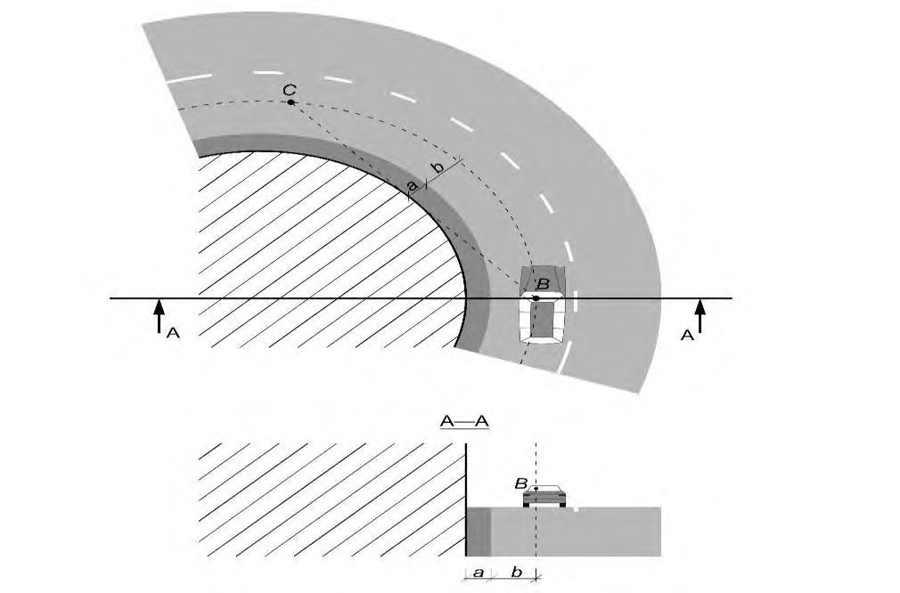
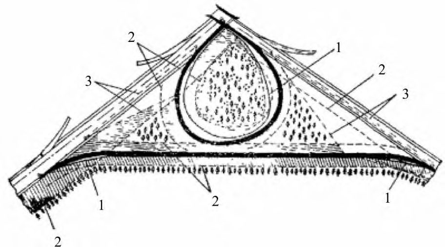
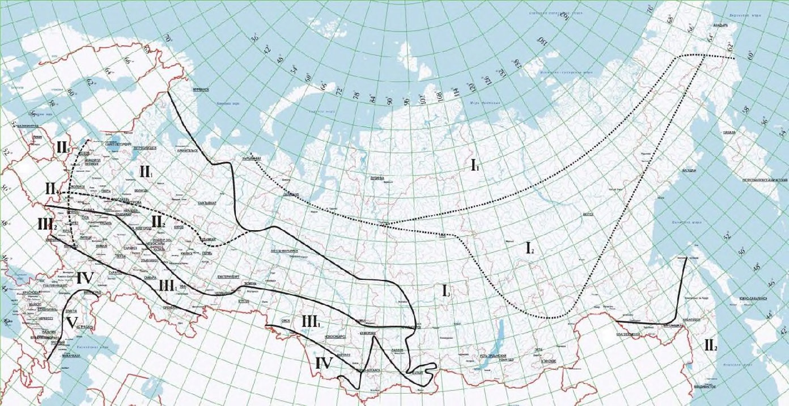
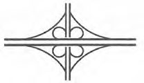
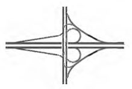
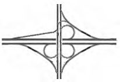
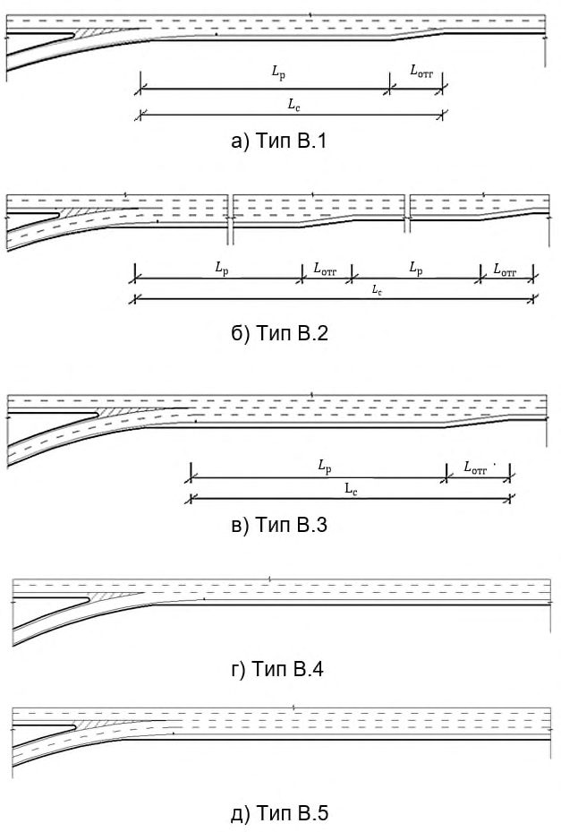
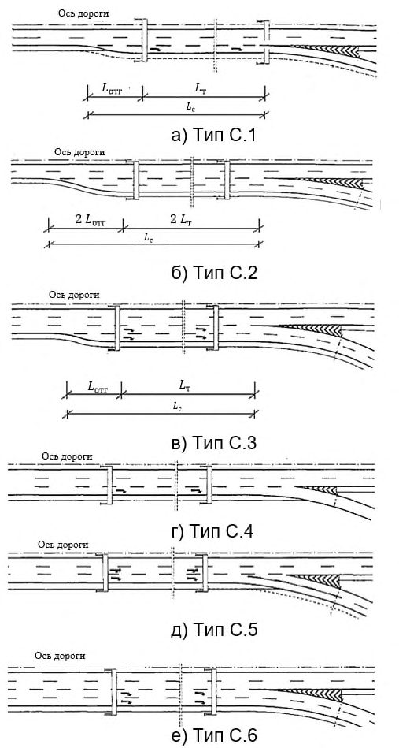

СП 34.13330.2021 «Автомобильные дороги»
О документе: разработчики, утверждение, регистрация, ключевые слова
СВОД ПРАВИЛ
1 ИСПОЛНИТЕЛИ - ЗАО «ПРОМТРАНСНИИПРОЕКТ», ФГБОУ «МАДИ»
2 ВНЕСЕН Техническим комитетом по стандартизации ТК 465 «Строительство»
- 3 ПОДГОТОВЛЕН к утверждению Департаментом градостроительной деятельности и архитектуры Министерства строительства и жилищно-коммунального хозяйства Российской Федерации (Минстрой России)
- 4 УТВЕРЖДЕН приказом Министерства строительства и жилищно-коммунального хозяйства Российской Федерации от 9 февраля 2021 г. № 53/пр и введен в действие с 10 августа 2021 г.
- 5 ЗАРЕГИСТРИРОВАН Федеральным агентством по техническому регулированию и метрологии (Росстандарт). Пересмотр 34.13330.2012 «СНиП 2.05.02-85* Автомобильные дороги»
В случае пересмотра (замены) или отмены настоящего свода правил соответствующее уведомление будет опубликовано в установленном порядке. Соответствующая информация, уведомление и тексты размещаются также в информационной системе общего пользования - на официальном сайте разработчика (Минстрой России) в сети Интернет
© Минстрой России, 2021
Настоящий нормативный документ не может быть полностью или частично воспроизведен, тиражирован и распространен в качестве официального издания на территории Российской Федерации без разрешения Минстроя России
УДК 625.7/8
ОКС 93.080
Ключевые слова: категория дороги, продольный профиль, поперечный профиль, пересечения, примыкания, земляное полотно, дорожная одежда, обустройство дорог, ограждения, геосинтетический материал.
Руководитель организации-разработчика
ЗАО «ПРОМТРАНСНИИПРОЕКТ»
Исполнительный
директор
Зам. директора по науке
Начальник отдела Комплексных исследований, стандартизации и логистического сопровождения проектов
Руководитель разработки
Исполнитель
А.Ю. Эглескалн
Л.А. Андреева
И.П. Потапов
Введение
Настоящий свод правил разработан в целях соблюдения требований Федерального закона от 30 декабря 2009 г. № 384-ФЗ «Технический регламент о безопасности зданий и сооружений» с учетом требований федеральных законов от 27 декабря 2002 г. № 184-ФЗ «О техническом регулировании», от 22 июня 2008 г. № 123-ФЗ «Технический регламент о требованиях пожарной безопасности», от 8 ноября 2007 г. № 257-ФЗ «Об автомобильных дорогах и о дорожной деятельности в Российской Федерации и о внесении изменений в отдельные законодательные акты Российской Федерации» и Технического регламента Таможенного союза ТР ТС 014/2011 «Безопасность автомобильных дорог».
Пересмотр выполнен авторским коллективом: ЗАО «ПРОМТРАНСНИИПРОЕКТ» (руководитель темы - д-р техн. наук Л.А. Андреева , И.П. Потапов, И.В. Музыкин ), ФГБОУ «МАДИ» (д-р техн. наук П.И. Поспелов , д-р техн. наук Э.М. Добров , канд. техн. наук А.В. Косцов, канд. техн. наук А.В. Корочкин , канд. техн. наук Ю.В. Кузнецов, канд. техн. наук А.П. Шевяков, канд. техн. наук В.П. Залуга, канд. техн. наук А.С. Холин, канд. техн. наук Д.С. Мартяхин, канд. техн. наук С.С. Мордвин, канд. техн. наук В.В. Рудакова, Л.А. Лыгина, В.В. Корчененкова, А.А. Зуйков ), ФГБОУ «СПбГАСУ» (канд. техн. наук М.П. Клековкина , канд. техн. наук Э.Д. Бондарева ), ГБУ «МОСГОРГЕОТРЕСТ» (канд. техн. наук Д.М. Немчинов ), ООО «Институт прикладных транспортных исследований» (канд. техн. наук Д.В. Енин )
| АВТОМОБИЛЬНЫЕДОРОГИ |
|---|
| Automobile roads |
| Дата введения - 2021-08-10 |
1Область применения
Настоящий свод правил устанавливает нормы проектирования на вновь строящиеся, реконструируемые и капитально ремонтируемые автомобильные дороги общего пользования, расположенных вне границ населенных пунктов.
Требования настоящего свода правил не распространяются на городские улицы и дороги, улицы и дороги сельских поселений, временные дороги, парковые дороги, дороги промышленных предприятий и автозимники.
2Нормативные ссылки
В настоящем своде правил использованы нормативные ссылки на следующие документы:
ГОСТ 17.5.3.06-85 Охрана природы. Земли. Требования к определению норм снятия плодородного слоя почвы при производстве земляных работ
ГОСТ 3344-83 Щебень и песок шлаковые для дорожного строительства. Технические условия
ГОСТ 8736-2014 Песок для строительных работ. Технические условия
ГОСТ 22733-2016 Грунты. Метод лабораторного определения максимальной плотности
ГОСТ 23558-94 Смеси щебеночно-гравийно-песчаные и грунты, обработанные неорганическими вяжущими материалами, для дорожного и аэродромного строительства. Технические условия
ГОСТ 25100-2020 Грунты. Классификация
ГОСТ 25584-2016 Грунты. Методы лабораторного определения коэффициента фильтрации
ГОСТ 26633-2015 Бетоны тяжелые и мелкозернистые. Технические условия
ГОСТ 27751-2014 Надежность строительных конструкций и оснований. Основные положения
ГОСТ 30491-2012 Смеси органоминеральные и грунты, укрепленные органическими вяжущими, для дорожного и аэродромного строительства. Технические условия
ГОСТ 32703-2014 Дороги автомобильные общего пользования. Щебень и гравий из горных пород. Технические требования
ГОСТ 32730-2014 Дороги автомобильные общего пользования. Песок дробленый.
Технические требования
ГОСТ 32824-2014 Дороги автомобильные общего пользования. Песок природный. Технические требования
ГОСТ 32826-2014 Дороги автомобильные общего пользования. Щебень и песок шлаковые. Технические требования
ГОСТ 32846-2014 Дороги автомобильные общего пользования. Элементы обустройства. Классификация
ГОСТ 32965-2014 Дороги автомобильные общего пользования. Методы учета интенсивности движения транспортного потока
ГОСТ 33062-2014 Дороги автомобильные общего пользования. Требования к размещению объектов дорожного и придорожного сервиса
ГОСТ 33063-2014 Дороги автомобильные общего пользования. Классификация типов местности и грунтов
ГОСТ 33100-2014 Дороги автомобильные общего пользования. Правила проектирования автомобильных дорог
ГОСТ 33475-2015 Дороги автомобильные общего пользования. Геометрические элементы. Технические требования
ГОСТ Р 50597-2017 Дороги автомобильные и улицы. Требования к эксплуатационному состоянию, допустимому по условиям обеспечения безопасности дорожного движения. Методы контроля
ГОСТ Р 52289-2019 Технические средства организации дорожного движения. Правила применения дорожных знаков, разметки, светофоров, дорожных ограждений и направляющих устройств
ГОСТ Р 52765-2007 Дороги автомобильные общего пользования. Элементы обустройства. Классификация
ГОСТ Р 52766-2007 Дороги автомобильные общего пользования. Элементы обустройства. Общие требования
ГОСТ Р 55028-2012 Дороги автомобильные общего пользования. Материалы геосинтетические для дорожного строительства. Классификация, термины и определения
ГОСТ Р 55029-2020 Дороги автомобильные общего пользования. Материалы геосинтетические для армирования асфальтобетонных слоев дорожной одежды. Технические требования
ГОСТ Р 56338-2015 Дороги автомобильные общего пользования. Материалы геосинтетические для армирования нижних слоев основания дорожной одежды. Технические требования
ГОСТ Р 56419-2015 Дороги автомобильные общего пользования. Материалы геосинтетические для разделения слоев дорожной одежды из минеральных материалов. Технические требования
ГОСТ Р 58107.1-2018 Освещение автомобильных дорог общего пользования. Нормы и методы расчета
ГОСТ Р 58401.1-2019 Дороги автомобильные общего пользования. Смеси асфальтобетонные дорожные и асфальтобетон. Система объемно-функционального проектирования. Технические требования
ГОСТ Р 58401.2-2019 Дороги автомобильные общего пользования. Смеси асфальтобетонные дорожные и асфальтобетон щебеночно-мастичные. Система объемнофункционального проектирования. Технические требования
ГОСТ Р 58406.1-2020 Дороги автомобильные общего пользования. Смеси щебеночномастичные асфальтобетонные и асфальтобетон. Технические условия
ГОСТ Р 58406.2-2020 Дороги автомобильные общего пользования. Смеси горячие асфальтобетонные и асфальтобетон. Технические условия
ГОСТ Р 58653-2019 Дороги автомобильные общего пользования. Пересечения и примыкания. Технические требования
ГОСТ Р 58818-2020 Дороги автомобильные с низкой интенсивностью движения. Проектирование, конструирование и расчет
ГОСТ Р 58947-2020 Дороги автомобильные общего пользования. Экодуки. Требования к размещению и обустройству
СП 14.13330.2018 «СНиП II-7-81* Строительство в сейсмических районах» (с изменением № 1)
СП 35.13330.2011 «СНиП 2.05.03-84* Мосты и трубы» (с изменениями № 1, № 2)
СП 39.13330.2012 «СНиП 2.06.05-84* Плотины из грунтовых материалов» (с изменениями № 1, № 2, № 3)
СП 42.13330.2016 «СНиП 2.07.01-89* Градостроительство. Планировка и застройка городских и сельских поселений» (с изменениями № 1, № 2)
СП 48.13330.2019 «СНиП 12-01-2004 Организация строительства»
СП 59.13330.2016 «СНиП 35-01-2001 Доступность зданий и сооружений для маломобильных групп населения»
СП 78.13330.2012 «СНиП 3.06.03-85 Автомобильные дороги» (с изменением № 1)
СП 104.13330.2016 «СНиП 2.06.15-85 Инженерная защита территории от затопления и подтопления»
СП 116.13330.2012 «СНиП 22-02-2003 Инженерная защита территорий, зданий и сооружений от опасных геологических процессов. Основные положения»
СП 122.13330.2012 «СНиП 32-04-97 Тоннели железнодорожные и автодорожные» (с изменением № 1)
СП 131.13330.2018 «СНиП 23-01-99* Строительная климатология»
СП 136.13330.2012 Здания и сооружения. Общие положения проектирования с учетом доступности для маломобильных групп населения (с изменением № 1)
СП 227.1326000.2014 Пересечения железнодорожных линий с линиями транспорта и инженерными сетями
СП 396.1325800.2018 Улицы и дороги населенных пунктов. Правила градостроительного проектирования (с изменением № 1)
Примечание - При пользовании настоящим сводом правил целесообразно проверить действие ссылочных документов в информационной системе общего пользования - на официальном сайте федерального органа исполнительной власти в сфере стандартизации в сети Интернет или по ежегодному информационному указателю «Национальные стандарты», который опубликован по состоянию на 1 января текущего года, и по выпускам ежемесячного информационного указателя «Национальные стандарты» за текущий год. Если заменен ссылочный документ, на который дана недатированная ссылка, то рекомендуется использовать действующую версию этого документа с учетом всех внесенных в данную версию изменений. Если заменен ссылочный документ, на который дана датированная ссылка, то рекомендуется использовать версию этого документа с указанным выше годом утверждения (принятия). Если после утверждения настоящего свода правил в ссылочный документ, на который дана датированная ссылка, внесено изменение, затрагивающее положение, на которое дана ссылка, то это положение рекомендуется применять без учета данного изменения. Если ссылочный документ отменен без замены, то положение, в котором дана ссылка на него, рекомендуется применять в части, не затрагивающей эту ссылку. Сведения о действии сводов правил целесообразно проверить в Федеральном информационном фонде стандартов.
3Термины и определения
В настоящем своде правил применены термины согласно [1], [2], ГОСТ 32846, ГОСТ 33100, ГОСТ 33475, СП 59.13330, СП 78.13330, ГОСТ Р 52765, ГОСТ Р 55028, ГОСТ Р 58818, а также следующие термины с соответствующими определениями:
- 3.1видимость встречного автомобиля при обгоне
- Минимальное расстояние видимости до движущегося с расчетной скоростью встречного автомобиля, которое необходимо для безопасной остановки совершающего обгон и движущегося по встречной полосе автомобиля.
- 3.2диаметр кольцевого пересечения
- Диаметр внешней кромки кольцевой проезжей части.
- 3.3зрительное ориентирование
- Свойство геометрических закономерностей трассы дороги, конструктивных особенностей элементов ее обустройства и организации придорожной среды, обеспечивающих информирование водителей о тенденции развития трассы и предстоящих условиях движения.
- 3.4коллекторно-распределительная дорога
- Элемент пересечения в разных уровнях (транспортной развязки), предназначенный для организации зоны переплетения транспортных потоков вне основной проезжей части, устраиваемый на отдельном земляном полотне.
- 3.5коллекторно-распределительная проезжая часть
- Элемент пересечения в разных уровнях (транспортной развязки), предназначенный для организации зоны переплетения транспортных потоков вне основной проезжей части, отделенный от нее дорожным ограждением.
- 3.6кольцевое пересечение
- Пересечение в одном уровне с центральным островком, как правило, в форме окружности, и кольцевой проезжей частью, по которой осуществляется движение автомобилей против хода часовой стрелки.
- 3.7линейно-кабельные сооружения транспортной многоканальной коммуникации; ЛКС ТМК
- Объекты инженерной инфраструктуры на основе микротрубочной многоканальной коммуникации, проложенной в том числе вдоль линейных транспортных объектов в минитраншее для размещения в них кабелей различного назначения.
- 3.8объект тяготения
- Территории или сооружения, которые обслуживает дорожная сеть.
- 3.9переходная кривая
- Геометрический элемент переменной кривизны, предназначенный для зрительного ориентирования и информирования водителей о тенденции развития трассы и принятия ими своевременных мер для плавного, безопасного и комфортного изменения режимов движения.
- 3.10переходно-скоростная полоса разгона
- Переходно-скоростная полоса, в состав которой входит участок для увеличения скорости автомобилей до скорости транспортного потока по основной полосе движения для свободного вхождения в него.
- 3.11переходно-скоростная полоса торможения
- Переходно-скоростная полоса, в состав которой входит участок для снижения скорости транспортных средств при выезде из основной полосы транспортного потока для последующего въезда на съезд транспортной развязки или другую дорогу.
- 3.12правоповоротная полоса кольцевого пересечения
- Дополнительная полоса, предназначенная только для движения автомобилей, выполняющих правый поворот; устраивается при высокой интенсивности правоповоротного транспортного потока в пределах кольцевой проезжей части или вне ее.
- 3.13примыкание в одном уровне
- Пересечение, где к одной дороге присоединяется в одном уровне другая дорога, не имеющая прямого продолжения и прерывающаяся в месте соединения.
- 3.14расстояние между пересечениями в разных уровнях (транспортными развязками)
- Расстояние между точкой конца последнего отгона переходно-скоростной полосы разгона одного пересечения в разных уровнях (транспортной развязки) и началом отгона переходно-скоростной полосы торможения следующего за ней пересечения в разных уровнях (транспортной развязки).
- 3.15съезд
- Конструктивный элемент дороги, обеспечивающий возможность поворота автомобиля с одной дороги на другую дорогу.
- 3.16уклон виража
- Односторонний поперечный уклон проезжей части на кривой в плане.
- 3.17участок переплетения транспортных потоков
- Участок автомобильной дороги или съезда, в пределах которого расположена конфликтная точка переплетения транспортных потоков.
- 3.18участок разделения транспортных потоков
- Участок автомобильной дороги или съезда, в пределах которого расположена конфликтная точка разделения транспортных потоков.
- 3.19участок слияния транспортных потоков
- Участок автомобильной дороги или съезда, в пределах которого расположена конфликтная точка слияния транспортных потоков.
- 3.20уровень удобства движения
- Комплексный показатель экономичности, удобства и безопасности движения, характеризующий состояние транспортного потока.
- 3.21ценные сельскохозяйственные угодья
- Орошаемые, осушенные и другие мелиорированные земли, занятые многолетними плодовыми насаждениями и виноградниками, а также участки с высоким естественным плодородием почв и другие приравниваемые к ним земельные угодья.
- 3.22центральный островок кольцевого пересечения
- Расположенный в центре элемент кольцевого пересечения, вокруг которого происходит перераспределение движения автомобилей по разным направлениям.
- 3.23ширина кольцевой проезжей части
- Сумма ширин полос движения, равная расстоянию от центрального островка до внешней кромки кольцевой проезжей части.
- 3.24грунтовые воды
- Подземные воды первого от поверхности земли постоянного водоносного горизонта, расположенного на первом водонепроницаемом слое.
- 3.25защита от эрозии поверхности
- Предотвращение или ограничение перемещения грунта или других частиц по поверхности защищаемого объекта под воздействием ветра и воды.
- 3.26канава боковая придорожная
- Канава, проходящая вдоль земляного полотна для сбора и отвода поверхностных вод, с поперечным сечением лоткового, треугольного или трапецеидального профиля.
- 3.27канава нагорная
- Канава, расположенная с нагорной стороны от дороги для перехвата стекающей по склону воды и с отводом ее от дороги.
- 3.28коэффициент уплотнения грунта
- Отношение фактической плотности сухого грунта (скелета) в конструкции к максимальной плотности того же сухого грунта, определяемой в лаборатории при испытании методом стандартного уплотнения.
- 3.29морозозащитный слой
- Дополнительный слой основания дорожной одежды из непучинистых и слабопучинистых материалов с коэффициентом фильтрации не менее 0,5 м/сут, обеспечивающий совместно с другими слоями основания и покрытия защиту конструкции от недопустимых деформаций морозного пучения.
- 3.30нестабильные слои насыпи
- Слои из мерзлых или талых переувлажненных грунтов, которые в насыпи имеют переменный коэффициент уплотнения, вследствие чего при оттаивании или длительном действии нагрузок могут возникать неоднородные остаточные деформации слоя.
- 3.31откос (насыпи, выемки)
- Боковая наклонная поверхность, ограничивающая искусственное земляное сооружение.
- 3.32основание выемки
- Массив грунта в условиях естественного залегания ниже границы рабочего слоя.
- 3.33основание насыпи
- Массив грунта в условиях естественного залегания, располагающийся ниже насыпного слоя.
- 3.34поверхностный водоотвод
- Устройства, предназначенные для отвода воды с поверхности дороги; дренажные устройства, служащие для отвода воды с поверхности земляного полотна.
- 3.35рабочий слой земляного полотна (подстилающий грунт)
- Верхняя часть земляного полотна в пределах от низа дорожной одежды до уровня, соответствующего 2/3 глубины промерзания конструкции, но не менее 1,5 м, считая от поверхности покрытия.
- 3.36стабилизация дискретных материалов
- Улучшение механического поведения несвязного каменного материала путем включения геосинтетических материалов, ограничивающих перемещения частиц заполнителя в целях снижения деформации слоя в случае приложения нагрузки.
- 3.37укрепление откосов
- Обеспечение местной устойчивости откосов за счет применения конструкций укрепления различных типов и видов для защиты от погодноклиматических факторов, водной и ветровой эрозии, силовых воздействий поверхностных вод. 3.38 ширина земляного полотна: Расстояние между бровками земляного полотна.
- 3.39дополнительные слои основания дорожной одежды
- Слои между несущим основанием и подстилающим грунтом, предусматриваемые для обеспечения требуемой морозоустойчивости и дренирования конструкции.
- 3.40дорожная конструкция
- Конструкция автомобильной дороги (участка автомобильной дороги), включающая основание земляного полотна, земляное полотно, дорожную одежду и водоотводные, удерживающие и укрепительные конструктивные элементы.
- 3.41защитный слой покрытия дорожной одежды
- Слой, устраиваемый на поверхности верхнего слоя покрытия, предназначенный для его защиты от непосредственного воздействия колес автомобильного транспорта и (или) комплекса погодно-климатических факторов и не учитывающийся при расчетах на прочность.
- 3.42классификация дорожных одежд
- Разделение дорожных одежд по типам исходя из их капитальности, характеризующей работоспособность дорожной одежды.
- 3.43нормативная осевая нагрузка
- Полная нагрузка от наиболее нагруженной оси условного двухосного автомобиля, к которой приводятся все автомобили с осевыми нагрузками, устанавливаемая нормативными документами для дорожных одежд при заданной капитальности и используемая для определения расчетной нагрузки при расчете дорожной одежды на прочность.
- 3.44максимальный размер зерен минерального заполнителя асфальтобетона
- Размер зерен минерального заполнителя, который на один размер больше номинального максимального размера зерен минерального заполнителя.
- 3.45осевая расчетная нагрузка
- Максимальная нагрузка на наиболее нагруженную ось для двухосных автомобилей или на приведенную ось для многоосных автомобилей, доля которых в составе движения с учетом перспективы изменения к концу межремонтного срока составляет не менее 5 %.
- 3.46слой износа
- Верхний замыкающий слой дорожной одежды, непосредственно воспринимающий воздействие колес автомобильного транспорта и погодно-климатических факторов.
- 3.47твердое покрытие
- Дорожное покрытие в составе дорожных одежд капитального, облегченного и переходного типов.
- 3.48уровень безопасности дорожного движения
- Соответствие дорожных условий безопасности дорожного движения.
- 3.49характерный участок дороги
- Участок проектируемой дороги, на протяжении которого основные элементы, параметры и характеристики остаются неизменными.
4Общие положения
Проектирование автомобильной дороги следует осуществлять как часть единой дорожной сети, состоящей из системы взаимосвязанных автомобильных дорог и имеющей иерархически построенную структуру в зависимости от транспортной функции, выполняемой автомобильной дорогой.
Проектирование дорог с низкой интенсивностью движения (НИД) следует вести в соответствии с требованиями ГОСТ Р 58818.
- 4.6. При определении расчетной среднесуточной интенсивности по прогнозным данным коэффициенты приведения интенсивности движения различных транспортных средств к легковому автомобилю следует принимать в соответствии с требованиями ГОСТ 32965.
В случаях, когда среднемесячная суточная интенсивность наиболее напряженного в году месяца более чем в два раза превышает установленную на основе расчетов среднегодовую суточную, последнюю для назначения категории дороги следует увеличивать в 1,5 раза.
Таблица 4.1 Функциональная классификация автомобильных дорог
| Функциональ- ный класс дороги | Транспортная функция | Соединяют |
|---|---|---|
| Основные магистральные автомобильные дороги | - Обеспечивают международные и межрегиональные транспортные связи, включают непрерывные маршруты, обеспечивающие передвижения интенсивных транспортных потоков | - Столицу Российской Федерации г. Москву со столицами иностранных государств; - столицу Российской Федерации г. Москву с административными центрами субъектов Российской Федерации; - автомобильные дороги, включенные в перечень международных (в соответствии с международными соглашениями Российской Федерации), между собой или являются их частью; - автомобильные дороги, являющиеся международными транспортными коридорами, входящих в европейскую (Е) и азиатскую (А) дорожную сеть, или являются их частью |
| Второстепен- ные магистральные автомобильные дороги | - Обеспечивают основные межрегиональные транспортные связи; - обеспечивают подъезд от магистральных автомобильных дорог или городов (административных центров субъектов Российской Федерации) к транспортным узлам, имеющим межгосударственное и федеральное значение | - Административные центры субъектов Российской Федерации, крупные и крупнейшие города между собой; - магистральные автомобильные дороги с транспортными узлами (морские порты, речные порты, аэропорты, железнодорожные станции и другие транспортные объекты), имеющими международное и федеральное значение |
| Основные распредели- тельные автомобильные дороги | - Обеспечивают перераспределение транспортных потоков между магистральными автомобильными дорогами и автомобильными дорогами местного значения; - обеспечивают транспортную связь сети магистральных автомобильных дорог с крупными и крупнейшими городами; - обеспечивают транспортную связь крупнейших городов Российской Федерации с обслуживающими их транспортными узлами; - обеспечивают транспортную связь магистральных автомобильных дорог с объектами тяготения федерального значения | - Магистральные автомобильные дороги между собой; - магистральные автомобильные дороги с крупными и крупнейшими городами; - крупнейшие города Российской Федерации с обслуживающими их транспортными узлами (морскими и речными портами, аэропортами, железнодорожными станциями и другими транспортными объектами); - магистральные автомобильные дороги с объектами тяготения (в том числе специального назначения) федерального значения |
| Функциональ- ный класс дороги | Транспортная функция | Соединяют |
|---|---|---|
| Распредели- тельные дороги автомобильные регионального значения, (распредели- тельные автомобильные дороги*) | - Обеспечивают перераспределение транспортных потоков между магистральными автомобильными дорогами и автомобильными дорогами местного значения; - обеспечивают связь магистральных и распределительных автомобильных дорог с административными центрами субъектов Российской Федерации, с административными центрами муниципальных районов, городских округов; - обеспечивают транспортную связь административных центров субъектов Российской Федерации с административными центрами муниципальных районов, городских округов; - обеспечивают транспортную связь административных центров субъектов Российской Федерации, муниципальных районов, городских округов с транспортными узлами регионального и межмуниципального значения; - обеспечивают подъезд к объектам тяготения регионального и межмуниципального значения | - Магистральные автомобильные дороги c распределительными автомобильными дорогами; - магистральные автомобильные дороги c местными автомобильными дорогами; - распределительные автомобильные дороги c местными автомобильными дорогами; - магистральные и распределительные автомобильные дороги с административными центрами субъектов Российской Федерации, с административными центрами муниципальных районов, городских округов; - административные центры субъектов Российской Федерации с административными центрами муниципальных районов, городских округов; - административные центры субъектов Российской Федерации, муниципальных районов, городских округов с транспортными узлами (аэропортами, морскими, речными портами и другими транспортными объектами) регионального и межмуниципального значения; - дорожная сеть общего пользования с объектами тяготения (в том числе специального назначения) регионального и межмуниципального значения |
| Местные автомобильные дороги | Обеспечивают прочие транспортные связи | - |
| * Для автомобильных дорог с НИД. | * Для автомобильных дорог с НИД. | * Для автомобильных дорог с НИД. |
Таблица 4.2 Соответствие функционального класса автомобильных дорог классам и категориям автомобильных дорог, допустимые уровни удобства движения автомобильных дорог
| Функциональный класс | Класс автомобильной дороги | Категория автомобильной дороги |
|---|---|---|
| Основные магистральные автомобильные дороги | Автомагистраль | IA |
| Основные магистральные автомобильные дороги | Обычная дорога | II, III |
| Второстепенные магистральные автомобильные дороги | Скоростная дорога | IБ |
| Второстепенные магистральные автомобильные дороги | Обычная дорога | IB*, II, III |
| Основные распределительные автомобильные дороги | Скоростная дорога | IБ |
| Основные распределительные автомобильные дороги | Обычная дорога | IB*, II, III |
| Распределительные автомобильные дороги регионального значения (распределитель- ные автомобиль- ные дороги) | Обычная дорога | II, III, IV, IVА-р, IVБ-р |
| Местные автомобильные дороги, подъезды** | Обычная дорога | III, IV, IVА-п, IVБ-п, VА, VБ |
Таблица 4.3 Соответствие расчетной среднесуточной интенсивности движения категории автомобильной дороги
| Категория автомобильной дороги | Расчетная среднесуточная интенсивность движения, приведенных ед./сут |
|---|---|
| IА, IБ, IВ | 14001 и более |
| II | 6001-14000* |
| III | 2001-6000 |
| IV | 401**-2000 |
| IVА-р, IVБ-р, IVА-п, IVБ-п, VА, VБ | В соответствии с ГОСТ Р 58818 |
Примечания
* При организации движения по четырем полосам движения на автомобильных дорогах категории II расчетную среднесуточную интенсивность движения следует принимать в соответствии с данными, указанными в таблице 5.11.
** Физ. ед./сут. в соответствии с ГОСТ Р 58818.
Коэффициенты приведения, указанные в ГОСТ 32965, допускается использовать для приведения интенсивности движения различных транспортных средств к легковому автомобилю транспортных потоков, двигающихся без остановки. Для регулируемых, нерегулируемых и кольцевых пересечений в одном уровне следует использовать коэффициенты приведения, приведенные в приложении Ж.
Таблица 4.4 Основные геометрические характеристики расчетных автомобилей
| Тип расчетного | Обозначение по [5] | Размеры, м | Размеры, м | Размеры, м | Размеры, м |
|---|---|---|---|---|---|
| автомобиля | Обозначение по [5] | Длина | Ширина | База/расстояния между осями | Передний свес |
| Легковой автомобиль (Л) | M 1 | 4,90 | 1,90 | 2,90 | 0,90 |
| Грузовой автомобиль (Г) | N 3 | 12,0 | 2,60 | 5,70/1,40 | 1,50 |
| Автобус (А) | M 3 | 12,0 | 2,55 | 6,20 | 2,75 |
| Сочлененный автобус (Ас) | M 3 | 18,4 | 2,55 | 5,96/6,05 | 2,68 |
| Автопоезд (А20) | N 3 + O 4 | 19,8 | 2,60 | 5,70/1,40 - 6,20/4,30 | 1,50 |
При соответствующем технико-экономическом обосновании допускается устройство конструктивных слоев дорожных одежд и земляного полотна с применением вторичных ресурсов.
Для автомобильных дорог категории I (далее при указании в тексте настоящего свода правил категории I следует принимать нормативы и положения для проектирования дорог категорий IА, IБ, IB) допускается предусматривать раздельное трассирование проезжих частей встречных направлений с учетом стадийного увеличения числа полос движения и сохранения крупных самостоятельных форм ландшафта и особо охраняемых природных территорий.
Требования по обеспечению безопасности движения транспорта, зданий и сооружений дорожной и автотранспортных служб выполняют с учетом наличия охранных зон, зон с особыми условиями использования территорий, зон транспортной безопасности.
Предусматривают проектные решения и мероприятия по снижению влияния вредных факторов воздействия движения автотранспортных средств (загрязнение атмосферного воздуха, шум, вибрация) на население и окружающую среду.
5Основные технические требования
Расчетные скорости
Таблица 5.1 Расчетные скорости движения
| Расчетные скорости, км/ч | Расчетные скорости, км/ч | Расчетные скорости, км/ч | |
|---|---|---|---|
| Категория дороги | Допускаемые на трудных участках | Допускаемые на трудных участках | |
| Основные | пересеченной местности | горной местности | |
| IА | 150 | 120 | 80 |
| IБ | 120 | 100 | 60 |
| IВ | 100 | 100 | 60 |
| II | 120 | 100 | 60 |
| III | 100 | 80 | 50 |
| IV | 80 | 60 | 40 |
Примечания
1 При разработке проектов реконструкции и капитального ремонта автомобильных дорог по нормам категорий IБ, IB и II допускается сохранять элементы плана, продольного и поперечного профилей (кроме числа полос движения) на отдельных участках существующих дорог, если они соответствуют расчетной скорости, установленной для дорог категории III, a по нормам категорий III, IV - на категорию ниже соответственно.
2 При наличии вдоль трассы автомобильных дорог капитальных дорогостоящих сооружений и лесных массивов, а также в случаях пересечения дорогами земель, занятых ценными сельскохозяйственными угодьями, допускается принимать расчетные скорости, установленные для трудных участков пересеченной местности.
План и продольный профиль
В целях обеспечения постоянства скорости и безопасности движения, а также учитывая возможности последующей реконструкции дороги за пределами перспективного периода, в качестве основных параметров элементов плана и продольного профиля автомобильной дороги следует принимать:
- а) расстояние видимости поверхности дороги - не менее 450 м;
- б) расстояние видимости встречного автомобиля на обычных дорогах - не менее 750 м;
- в) радиус кривой в плане - не менее 3000 м;
- г) радиус кривой в продольном профиле:
- 1) на выпуклых переломах продольного профиля - не менее 70 000 м,
- 2) на вогнутых переломах продольного профиля - не менее 8 000 м;
- д) длину криволинейного участка в продольном профиле:
- 1) выпуклого - не менее 300 м,
- 2) вогнутого - не менее 100 м;
- е) продольный уклон - не более 30 ‰.
Трассу прокладывают из условия плавного сопряжения элементов плана трассы и проектной линии продольного профиля с учетом расчетной скорости движения.
При этом следует обеспечить для кривых в плане:
- скорость нарастания центробежного ускорения - не более 0,5 м/с 3 ;
- коэффициент поперечной силы - в соответствии с таблицей 5.2;
Примечание - На криволинейных участках плана трассы с нелинейным изменением кривизны следует проверять расчетом максимальную скорость нарастания центробежного ускорения. При проектировании плана и профиля следует учитывать возможность реконструкции трассы и не принимать минимально допустимые параметры трассы.
Таблица 5.2 Коэффициенты поперечной силы
| Расчетная скорость, км/ч | 150 | 120 | 100 | 80 | 60 | 50 | 40 | 30 |
|---|---|---|---|---|---|---|---|---|
| Коэффициент поперечной силы μ | 0,08 | 0,09 | 0,12 | 0,14 | 0,17 | 0,19 | 0,23 | 0,28 |
Таблица 5.3 Допустимые параметры геометрических элементов плана и продольного профиля автомобильных дорог
| Расчетная скорость, км/ч | Наибольшие продольные уклоны,‰ | Наименьшие радиусы кривых, м | Наименьшие радиусы кривых, м | Наименьшие радиусы кривых, м | Наименьшие радиусы кривых, м | Наименьшие радиусы кривых, м |
|---|---|---|---|---|---|---|
| В плане | В плане | В продольном профиле | В продольном профиле | В продольном профиле | ||
| выпуклых | вогнутых | вогнутых | ||||
| Основные | В горной местности | Основные | В горной местности | |||
| 150 | 30 | 1200 | 1000 | 30000 | 8000 | 4000 |
| 120 | 40 | 800 | 600 | 15000 | 5000 | 2500 |
| 100 | 50 | 600 | 400 | 10000 | 3000 | 1500 |
| 80 | 60 | 300 | 250 | 5000 | 2000 | 1000 |
| 60 | 70 | 150 | 125 | 2500 | 1500 | 600 |
| 50 | 80 | 100 | 100 | 1500 | 1200 | 400 |
| 40 | 90 | 60 | 60 | 1000 | 1000 | 300 |
|---|---|---|---|---|---|---|
| 30 | 100 | 30 | 30 | 600 | 600 | 200 |
Примечание - В условиях реконструкции и капитального ремонта автомобильных дорог, на съездах пересечений и примыканий автомобильных дорог, на трудных участках пересеченной и горной местности, при устройстве дорог в застроенных районах, на ценных сельскохозяйственных угодьях и других приравненных к ним территориях наименьший радиус кривых в плане допускается обосновывать расчетом по 5.6.
При сооружении автомобильных дорог на трудных участках горной и пересеченной местности (за исключением мест с абсолютными отметками более 3000 м над уровнем моря) для участков протяженностью до 500 м допускается увеличение значений наибольших продольных уклонов, приведенных в таблице 5.3, но не более чем на 20 ‰.
На дорогах категории I с раздельными проезжими частями на трудных участках горной и пересеченной местности продольные уклоны на спуск допускается увеличивать против норм, установленных таблицей 5.3, но не более чем на 20 ‰.
где v - расчетная скорость, км/ч; μ - коэффициент поперечной силы, определяемый по таблице 5.2; i п.п - поперечный уклон проезжей части в долях единицы, принимается для виража со знаком «плюс», для двускатного поперечного профиля - со знаком «минус».
Таблица 5.4 Наименьшие значения длин переходных кривых
| При расчетной скорости, км/час | Длина переходной кривой, м, для радиуса кривой в плане R, м | Длина переходной кривой, м, для радиуса кривой в плане R, м | Длина переходной кривой, м, для радиуса кривой в плане R, м | Длина переходной кривой, м, для радиуса кривой в плане R, м | Длина переходной кривой, м, для радиуса кривой в плане R, м | Длина переходной кривой, м, для радиуса кривой в плане R, м | Длина переходной кривой, м, для радиуса кривой в плане R, м | Длина переходной кривой, м, для радиуса кривой в плане R, м | Длина переходной кривой, м, для радиуса кривой в плане R, м | Длина переходной кривой, м, для радиуса кривой в плане R, м | Длина переходной кривой, м, для радиуса кривой в плане R, м | Длина переходной кривой, м, для радиуса кривой в плане R, м |
|---|---|---|---|---|---|---|---|---|---|---|---|---|
| При расчетной скорости, км/час | 30- 60 | 60- 100 | 100- 150 | 150- 200 | 200- 250 | 250- 300 | 301- 400 | 401- 500 | 501- 800 | 801- 1200 | 1201- 2000 | Более 2000 |
| Менее 120 | 30 | 40 | 50 | 60 | 70 | 80 | 90 | 100 | 100 | 100 | 100 | - |
| 120 и более | - | - | - | - | - | - | - | - | - | 120 | 0,1 R | 200 |
В сложных условиях (трудные участки пересеченной и горной местности, застроенные территории, ценные сельскохозяйственные угодья, условия капитального ремонта и реконструкции) наименьшую длину переходной кривой, м, допускается определять по формуле
где 𝑉 - расчетная скорость движения, км/ч;
R - радиус кривой в плане, сопрягаемый переходной кривой, м;
I - скорость нарастания центробежного ускорения, м/с 3 , принимаемая равной:
0,3 - для радиусов кривых
0,4 то же
300 м и более; менее 300 м.
При капитальном ремонте и реконструкции дорог, а также в горных условиях допускается увеличение этих значений до:
0,5 - для радиусов кривых
300 м и более;
0,7 - то же св. 150 до 300 м;
0,9 - » до 150 м включительно.
При сопряжении круговых кривых, направленных в одну сторону с помощью переходной кривой, наименьшую длину участка переходной кривой, м, следует определять по формуле
где 𝑅1, 𝑅 2 - радиусы кривых в плане, сопрягаемых переходной кривой, м.
Скорость нарастания центробежного ускорения следует принимать по нормам меньшего радиуса сопрягаемых круговых кривых.
Допускается не устраивать переходные кривые в условиях реконструкции, капитального ремонта автомобильных дорог.
Таблица 5.5 Уменьшение величины наибольших продольных уклонов на кривых малых радиусов
| Радиус кривой в плане, м | 50 | 45 | 40 | 35 | 30 |
|---|---|---|---|---|---|
| Уменьшение наибольших продольных уклонов сравнению с указанными в таблице 5.3, ‰, не менее | 10 | 15 | 20 | 25 | 30 |
Таблица 5.6 Допустимая длина участков с затяжными продольными уклонами
| Продольный уклон,‰ | Максимальная длина участка, м, при высоте над уровнем моря, м | Максимальная длина участка, м, при высоте над уровнем моря, м | Максимальная длина участка, м, при высоте над уровнем моря, м | Максимальная длина участка, м, при высоте над уровнем моря, м |
|---|---|---|---|---|
| Продольный уклон,‰ | 1000 | 2000 | 3000 | 4000 |
| 60 | 2500 | 2200 | 1800 | 1500 |
| 70 | 2200 | 1900 | 1600 | 1300 |
| 80 | 2000 | 1600 | 1500 | 1100 |
| 90 | 1500 | 1200 | 1000 | - |
При продольных уклонах более 90 ‰ предельную длину участка с затяжным уклоном следует определять по результатам расчетов в зависимости от динамических характеристик транспортных средств, материала покрытия дорожной одежды и высоты расположения участка дороги над уровнем моря.
Вместимость площадок для остановки автомобилей должна назначаться не менее трех грузовых автомобилей, а выбор места их расположения определяют из условий безопасности стоянки, исключающей возможность появления осыпей и камнепадов.
На затяжных спусках с уклонами более 50 ‰ необходимо предусматривать противоаварийные съезды, которые устраивают перед кривыми в плане радиусом менее 600 м, расположенными в конце спуска, а также на прямых участках спуска через каждые 0,8-1,0 км.
Таблица 5.7 Параметры геометрических элементов серпантин
| Параметры элементов серпантины | Параметры серпантины при расчетной скорости движения, км/ч | Параметры серпантины при расчетной скорости движения, км/ч | Параметры серпантины при расчетной скорости движения, км/ч |
|---|---|---|---|
| 30 | 20 | 15 | |
| Наименьший радиус кривых в плане, м | 30 | 20 | 15 |
| Поперечный уклон проезжей части на вираже,‰ | 60 | 60 | 60 |
| Наименьшая длина переходной кривой, м | 30 | 25 | 20 |
| Уширение проезжей части с двумя полосами движения, м | 2,2 | 3,0 | 3,5 |
| Наибольший продольный уклон в пределах серпантин,‰ | 30 | 35 | 40 |
Серпантины радиусом менее 30 м проектируют только на дорогах категорий IV и при запрещении движения автопоездов длиной свыше 11 м.
Условия видимости
Наименьшие расстояния видимости следует назначать по таблице 5.8.
Таблица 5.8 Наименьшие расстояния видимости
| Расчетная скорость | Наименьшие расстояния видимости, м | Наименьшие расстояния видимости, м |
|---|---|---|
| движения, км/ч | для остановки | встречного автомобиля |
| 150 | 300 | - |
| 120 | 250 | 450 |
| 100 | 200 | 350 |
| 80 | 150 | 250 |
| 60 | 85 | 170 |
| 50 | 75 | 130 |
| 40 | 55 | 110 |
| 30 | 45 | 90 |
В условиях реконструкции и капитального ремонта автомобильных дорог, на съездах пересечений и примыканий автомобильных дорог, на трудных участках пересеченной и горной местности, при устройстве дорог в застроенных районах, на ценных сельскохозяйственных угодьях и других приравненных к ним территориях наименьшее расстояние видимости для остановки автомобиля допускается определять индивидуально по формуле
где 𝑆ост - расчетное расстояние видимости покрытия проезжей части для остановки;
V расч - расчетная скорость движения в начале торможения, км/ч; t p - время реакции водителя, принимаемое в зависимости от категории дороги:
- автомагистрали, скоростные дороги - 2,5 с;
- обычные дороги - 2,0 с.
𝐾эксп -коэффициент эксплуатационного состояния тормозной системы автомобиля, Кэксп = 1,1; φ - расчетный коэффициент продольного сцепления, ед,; i - продольный уклон автомобильной дороги, доли ед.
Расчетный коэффициент продольного сцепления следует принимать в соответствии с 8.11.
- а - расстояние между кромкой полосы движения и препятствием (шумозащитный экран, барьерное ограждение, откос выемки и др.); В - положение глаз водителя; b - расстояние от положения глаз водителя) до кромки полосы движения ( b = 1,8 м); С - положение препятствия) на проезжей части

Рисунок 5.1 - Схема к определению расстояния боковой видимости на многополосной проезжей части
Поперечный профиль
Таблица 5.9 Параметры основных элементов проезжей части и земляного полотна автомобильных дорог
| Категория автомобильной дороги | Категория автомобильной дороги | Категория автомобильной дороги | Категория автомобильной дороги | Категория автомобильной дороги | ||
|---|---|---|---|---|---|---|
| Элемент поперечного профиля | Элемент поперечного профиля | IA | IБ IВ | II | III | IV |
| Число полос движения | Число полос движения | 4 и более | 4 и более | 2, 4 | 2 | 2 |
| Ширина полосы движения, м | Ширина полосы движения, м | 3,5-3,75* | 3,5-3,75* | 3,5-3,75* | 3,5 | 3,0 |
| Ширина обочины, м | Ширина обочины, м | 3,75 | 3,5 | 3,5 | 2,5 | 2,0 |
| Ширина остановочной полосы, м | Ширина остановочной полосы, м | 2,5 | 2,5 | - | - | - |
| Минимальная ширина укрепленной части обочины (не считая укрепление засевом трав, одерновкой), м | всего | - | - | 2,0 | 1,5 | 1 |
| в том числе краевой полосы у обочины | - | - | 0,5 | 0,5 | 0,5 |
* Для двухполосных дорог категории II и четырехполосных дорог категории I ширину всех полос движения следует принимать 3,75 м, для дорог категории I с числом полос движения шесть и более ширину первой и второй полосы (от обочины) следует принимать 3,75 м, остальных полос - 3,5 м. Для дорог категории IA с расчетной скоростью 150 км/ч ширину всех полос движения следует принимать 3,75 м, для дорог категории II с четырьмя полосами движения ширину всех полос движения следует принимать 3,5 м.
Примечание - Ширину обочин дорог в горной местности, на участках, проходящих по ценным сельскохозяйственным угодьям, в местах с переходно-скоростными полосами и с дополнительными полосами на подъем допускается уменьшать до 1,5 м - для дорог категорий IА, IБ, IВ и II и до 1 м - для дорог остальных категорий.
Таблица 5.10 Параметры элементов разделительной полосы автомобильных дорог
| Элемент разделительной полосы | Ширина, м |
|---|---|
| Наименьшая ширина центральной разделительной полосы с дорожными ограждениями | 1,0 + S * + 1,0 |
| Наименьшая ширина краевой полосы | 0,75 |
Примечания
- 1 Сопряжение проезжих частей противоположных направлений на дорогах категории I и дорогах категории II с четырьмя полосами движения устраивают с центральной разделительной полосой. Центральные разделительные полосы на дорогах категории I и дорогах категории II с четырьмя полосами движения следует проектировать с дорожными ограждениями .
- 2 При капитальном ремонте автомобильных дорог категории II c четырьмя полосами движения, для разделения транспортных потоков встречных направлений допускается установка тросовых ограждений или ограждений с отделяющейся балкой без консоли по ГОСТ Р 52289. Ширину разделительной полосы при этом допускается уменьшать до ширины, м, равной: 0,5 + S + 0,5.
Таблица 5.11 Число полос движения на дорогах категорий I и II
| Рельеф местности | Интенсивность движения, приведенных ед./сут | Число полос движения |
|---|---|---|
| Равнинный, пересеченный, горный | 10 001-40 000 | 4 |
| Равнинный, пересеченный, горный | 40 001-80 000 | 6 |
| Равнинный, пересеченный, горный | Св. 80 000 | 8 |
| Трудные участки пересеченной и горной местности | 10 001-34 000 | 4 |
| Трудные участки пересеченной и горной местности | 34 001-70 000 | 6 |
| Трудные участки пересеченной и горной местности | Св. 70 000 | 8 |
Расположение мест смены числа полос движения на участках с затрудненным отводом воды и подверженных обледенению (на мостах и путепроводах) не допускается. В пересеченной или горной местности полосы опережения должны находиться, по возможности, в направлении подъема и соответствовать требованиям устройства дополнительных полос проезжей части на подъем.
- при продольном уклоне от 30 до 40 ‰ и протяженности подъема свыше 1 км;
- при продольном уклоне, равном или превышающем 40 ‰ и протяженности подъема свыше 0,5 км.
Таблица 5.12 Требования к протяженности полос опережения за пределами подъема
| Интенсивность движения в сторону подъема, прив. ед./сут | Менее 4000 | От 4000 до 5000 | От 5000 до 8000 | 8000 и более |
|---|---|---|---|---|
| Протяженность полосы опережения (дополнительной полосы проезжей части на подъем) за пределами подъема, м | 50 | 100 | 150 | 200 |
Поверхности разделительных полос в зависимости от их ширины, применяемых грунтов, вида укрепления и природно-климатических условий придают уклон к середине разделительной полосы или в сторону проезжей части. При уклоне поверхности разделительной полосы к середине предусматривают устройство специальных лотков и коллекторов для отвода воды.
На кривых в плане меньших радиусов предусматривают устройство проезжей части с односкатным поперечным профилем (виражей).
Таблица 5.13 Поперечные уклоны проезжей части
| Категория дороги | Поперечный профиль проезжей части | Полоса движения | Поперечный уклон в различных дорожно-климатических зонах, ‰ | Поперечный уклон в различных дорожно-климатических зонах, ‰ | Поперечный уклон в различных дорожно-климатических зонах, ‰ | Поперечный уклон в различных дорожно-климатических зонах, ‰ |
|---|---|---|---|---|---|---|
| I | II и III | IV | V | |||
| I | Односкатный на каждом направлении движения | Первая и вторая от разделительной полосы | 15 | 20 | 20 | 15 |
| Третья и последующие от разделительной полосы | 20 | 25 | 25 | 20 | ||
| Двускатный на каждом направлении движения | Первая и вторая от оси проезжей части | 15 | 20 | 20 | 15 | |
| Третья и последующие от оси проезжей части | 20 | 25 | 25 | 20 | ||
| II-IV | Двускатный | Каждая | 15 | 20 | 20 | 15 |
На гравийных и щебеночных покрытиях поперечный уклон принимают 25-30 ‰, а на покрытиях из грунтов, укрепленных местными материалами, и на мостовых из колотого и булыжного камня - 25-35 ‰.
- 30-40 ‰ - при укреплении с применением вяжущих;
- 40-60 ‰ - при укреплении гравием, щебнем, шлаком или замощении каменными материалами и бетонными плитами;
- 50-60 ‰ - при укреплении дернованием или засевом трав.
Для районов с небольшой продолжительностью снегового покрова и отсутствием гололеда для обочин, укрепленных дернованием, может быть установлен поперечный уклон 50-80 ‰.
Примечание - При устройстве земляного полотна из крупно- и среднезернистых песков, а также из тяжелых суглинистых грунтов и глин уклон обочин, укрепленных засевом трав, допускается принимать равным 40 ‰.
Таблица 5.14 Поперечные уклоны проезжей части на виражах
| Радиусы кривых в плане, м | Поперечный уклон проезжей части на виражах,‰ | Поперечный уклон проезжей части на виражах,‰ |
|---|---|---|
| Радиусы кривых в плане, м | Основной | Допускаемый в районах с гололедом не более 3 дней в году и продолжительностью снегового покрова не более 30 дней в году |
| От 2999 до 1000 на дорогах категории I и от 1999 до 1000 на дорогах других категорий | 20-30 | 20-30 |
| От 999 до 700 | 30-40 | 30-40 |
| От 699 до 650 | 40 | 40-50 |
| От 649 до 600 | 40 | 40-60 |
| менее 600 | 40-60* |
|---|---|
| * В равнинных районах дорожно-климатической зоны V наибольший поперечный проезжей части на виражах допускается увеличивать до 80 ‰. | уклон |
Если расстояние между двумя смежными круговыми кривыми, обращенными радиусами в одну сторону меньше суммы длин отгонов виражей для этих кривых, то между ними предусматривают также непрерывно односкатный профиль с уклоном этих виражей.
При этом минимальный уклон односкатного профиля должен быть не менее 20 ‰, а дополнительный продольный уклон наружной кромки проезжей части по отношению к проектному продольному уклону не должен превышать соответствующие значения, принимаемые для участков отгона виража.
Таблица 5.15 Наибольшие значения максимального дополнительного продольного уклона наружной кромки проезжей части
| Категория дороги | Тип местности | Максимальный дополнительный продольный уклон,‰ |
|---|---|---|
| I и II | Любой | 5 |
| III-IV | В равнинной местности | 10 |
| III-IV | В горной местности | 20 |
Значение уширения на кривых в плане следует принимать по таблице 5.16.
Таблица 5.16 Уширение проезжей части автомобильных дорог
| Радиусы кривых в плане, м | Значение уширения, м | Значение уширения, м |
|---|---|---|
| Радиусы кривых в плане, м | на каждую полосу движения | всего для двухполосной проезжей части |
| 615-650 | 0,2 | 0,4 |
| 375-614 | 0,25 | 0,5 |
| 275-374 | 0,3 | 0,6 |
| 185-274 | 0,4 | 0,8 |
| 120-184 | 0,45 | 0,9 |
| 90-119 | 0,55 | 1,1 |
| 75-89 | 0,6 | 1,2 |
| 65-74 | 0,65 | 1,3 |
| 55-64 | 0,7 | 1,4 |
| 45-54 | 0,75 | 1,5 |
| 35-44 | 0,9 | 1,8 |
| 30-34 | 1,1 | 2,2 |
| Менее 30 | По расчету | По расчету |
Уширения на кривых в плане при радиусе менее 30 м следует определять по формуле
где L - расстояние от переднего бампера до задней оси расчетного транспортного средства, м (таблица 4.4);
R - радиус кривой в плане, м.
Уширение полосы движения проезжей части дорог производят в пределах переходных кривых, а при их отсутствии - на расстоянии 50 м.
При недостаточной ширине обочин для размещения уширений проезжей части с соблюдением этих условий предусматривают уширение земляного полотна. Уширение проезжей части выполняют пропорционально расстоянию от начала криволинейного участка трассы.
В горной местности в виде исключения допускается размещать уширения проезжей части на кривых в плане частично с внешней стороны закругления.
Целесообразность применения кривых с уширениями проезжей части более 2,2 м необходимо обосновывать сопоставлением с вариантами увеличения радиусов кривых в плане, при которых не требуется устройств таких уширений.
Трассирование с учетом ландшафта
Для дорог категорий I и II не допускается сочетание продольных уклонов, кривых в плане и продольном профиле с такими значениями, при которых создается впечатление провалов.
Следует избегать сопряжений концов кривых в плане с началом кривых в продольном профиле. Расстояние между ними должно быть не менее 150 м. Если кривая в плане расположена в конце спуска длиной свыше 500 м и с уклоном более 30 ‰, то радиус ее должен быть увеличен не менее чем в 1,5 раза по сравнению с расчетными значениями, получаемыми по формуле (5.1), с совмещением кривой в плане и вогнутой кривой в продольном профиле в конце спуска.
Таблица 5.17 Предельная длина прямой в плане на автомобильных дорогах
| Категория дороги | Предельная длина прямой в плане, м, на местности | Предельная длина прямой в плане, м, на местности |
|---|---|---|
| Категория дороги | равнинной | пересеченной, горной |
| I | 5000 | 3000 |
| II, III | 3500 | 2000 |
| IV | 2000 | 1500 |
Таблица 5.18 Наименьший радиус круговой кривой при малых углах поворота дороги
| Угол поворота, градусы | 1 | 2 | 3 | 4 | 5 | 6 | 7-8 |
|---|---|---|---|---|---|---|---|
| Наименьший радиус круговой кривой, м | 30 000 | 20 000 | 10 000 | 6 000 | 5 000 | 3 000 | 2 500 |
Таблица 5.19 Предельные длины прямых вставок в продольном профиле на участках прямых в плане
| Радиус вогнутой кривой в продольном профиле, м | Алгебраическая разность продольных уклонов,‰ | Алгебраическая разность продольных уклонов,‰ | Алгебраическая разность продольных уклонов,‰ | Алгебраическая разность продольных уклонов,‰ | Алгебраическая разность продольных уклонов,‰ | Алгебраическая разность продольных уклонов,‰ | Алгебраическая разность продольных уклонов,‰ |
|---|---|---|---|---|---|---|---|
| 20 | 30 | 40 | 50 | 60 | 80 | 100 | |
| Наибольшая длина прямой вставки в продольном профиле, м | Наибольшая длина прямой вставки в продольном профиле, м | Наибольшая длина прямой вставки в продольном профиле, м | Наибольшая длина прямой вставки в продольном профиле, м | Наибольшая длина прямой вставки в продольном профиле, м | Наибольшая длина прямой вставки в продольном профиле, м | Наибольшая длина прямой вставки в продольном профиле, м | |
| Для дорог категорий I и II | Для дорог категорий I и II | Для дорог категорий I и II | Для дорог категорий I и II | Для дорог категорий I и II | Для дорог категорий I и II | Для дорог категорий I и II | |
| 4000 | 150 | 100 | 50 | 0 | 0 | 0 | - |
| 8000 | 360 | 250 | 200 | 170 | 140 | 110 | - |
| 12000 | 680 | 500 | 400 | 350 | 250 | 200 | - |
| 20000 | - | - | 850 | 700 | 600 | 550 | - |
| 25000 | - | - | - | - | 900 | 800 | - |
| Для дорог категорий III и IV | Для дорог категорий III и IV | Для дорог категорий III и IV | Для дорог категорий III и IV | Для дорог категорий III и IV | Для дорог категорий III и IV | Для дорог категорий III и IV | |
| 2000 | 120 | 100 | 50 | 0 | 0 | 0 | 0 |
| 6000 | 550 | 440 | 320 | 220 | 140 | 60 | 0 |
| 10000 | - | - | 680 | 600 | 420 | 300 | 200 |
| 15000 | - | - | - | - | - | 800 | 600 |
Велосипедные дорожки
Пешеходные переходы
Тип пешеходного перехода в одном или разных уровнях следует принимать согласно таблице 5.20.
Таблица 5.20 Тип пешеходного перехода в одном или разных уровнях на автомобильных дорогах
| Тип пешеходного перехода в одном или разных уровнях на автомобильных дорогах категории | Тип пешеходного перехода в одном или разных уровнях на автомобильных дорогах категории | Тип пешеходного перехода в одном или разных уровнях на автомобильных дорогах категории |
|---|---|---|
| I | II | III-IV |
| Надземный и подземный пешеходный переход | Наземные регулируемые и нерегулируемые пешеходные переходы при числе полос движения на проезжей части не более 2. На многополосных дорогах - надземные и подземные пешеходные переходы. Наземные регулируемые пешеходные переходы в составе регулируемых пересечений в одном уровне | Наземные нерегулируемые пешеходные переходы (допускается применять регулируемые пешеходные переходы в составе пересечения в одном уровне со светофорным регулированием) |
Наземные нерегулируемые и регулируемые пешеходные переходы
Надземные и подземные пешеходные переходы
6Пересечения и примыкания
Пересечения и примыкания автомобильных дорог
Примыкания автомобильных дорог и улиц населенных пунктов, проездов, съездов объектов дорожного и придорожного сервиса, съездов транспортных развязок (за исключением смежных съездов, расположенных в пределах одной транспортной развязки) к дорогам категории IA рекомендуется предусматривать не чаще чем через 10 км, на дорогах категорий IБ, IB, II - не чаще чем через 5 км. При отступлении от рекомендуемых значений расстояний между примыканиями проектные решения следует обосновывать расчетами обеспечения пропускной способности и безопасности движения, рассматривая возможность увеличения расстояний между примыканиями путем устройства дополнительных дорог, располагаемых вдоль основных проезжих частей дорог категорий I и II, проектирование которых необходимо вести с учетом перспективной интенсивности движения.
- расстояния и условия видимости, соответствующие расчетной скорости движения на участке дороги, где расположено пересечение;
- учет потребностей всех групп пользователей проектируемого пересечения: пешеходов (при наличии пешеходного движения), в том числе МГН, велосипедистов (при наличии велосипедного движения), автомобильного движения;
- необходимую для пропуска существующих и перспективных транспортных потоков пропускную способность пересечения или примыкания;
- возможность принятия водителем однозначных решений при следовании по пересечению (в том числе путем стандартизации проектных решений);
В случае отсутствия таких сооружений на участках дорог протяженностью свыше 2 км при необходимости предусматривают их устройство.
Габариты искусственных сооружений для полевых дорог и дорог для прогона скота принимают по таблице 6.1.
Таблица 6.1 Габариты искусственных сооружений для полевых дорог и дорог для прогона скота
| Назначение сооружения | Ширина, м | Высота, м |
|---|---|---|
| Для полевых дорог | 6 | 4,5 |
| Для прогона скота | 4 | 2,5 |
Пересечения и примыкания в одном уровне
Расстояния между пересечениями и примыканиями в одном уровне следует принимать по ГОСТ Р 58653. Расстояние между самостоятельным примыканием в одном уровне и пересечением в разных уровнях следует определять, как расстояние между примыканием в одном уровне и ближайшим к нему съездом пересечения в разных уровнях.
- примыкание в одном уровне с тремя подходами;
- пересечение в одном уровне с четырьмя подходами;
- смещенные пересечения в одном уровне;
- пересечение в одном уровне с отнесенными на разворот левыми поворотами;
- кольцевое пересечение.
Область применения пересечений и примыканий в одном уровне следует принимать по ГОСТ Р 58653.
Следует избегать применения пересечений со светофорным регулированием на магистральных автомобильных дорогах. Применение кольцевых пересечений на магистральных автомобильных дорогах не рекомендуется, однако предпочтительнее применения светофорного регулирования.
В случае использования пересечений со светофорным регулированием и кольцевых пересечений на магистральных автомобильных дорогах следует обеспечивать постепенное снижение скорости движения транспортного потока на подходах к пересечению, в том числе за счет геометрических параметров подходов к пересечению в случае кольцевого пересечения.
Главная дорога определяется на основании категории и функционального класса пересекающихся дорог, а если пересекающиеся дороги одной категории - на основании интенсивности движения.
Форма пересечения или примыкания должна быть выбрана таким образом, чтобы главная дорога на пересечении или примыкании имела естественное продолжение. Если форма пересечения или примыкания не предусматривает визуального выделения главной дороги, необходимо исправить формы пересечения или примыкания в соответствии с ГОСТ Р 58653.
Регулируемые и нерегулируемые пересечения и примыкания в одном уровне
Длины полос торможения, накопления очереди и разгона определяются расчетом по ГОСТ Р 58653.
На пересечениях в одном уровне применяют следующие схемы организации движения:
- без установки знаков приоритета на пересечениях равнозначных дорог;
- с установкой знаков приоритета на пересечениях равнозначных дорог;
- светофорное регулирование.
- категорий I, II - не менее 25 м;
- категории III - 20 м;
- категорий IV - 15 м.
При расчете на регулярное движение автопоездов и сочлененных автобусов (более 25 % в составе потока) радиусы кривых на съездах следует увеличивать до 30 м.
Радиусы сопряжений допускается уменьшать в соответствии с ГОСТ Р 58653.
Минимальные радиусы кривых при сопряжениях дорог в местах пересечений или примыканий в одном уровне при использовании поворотного съезда следует принимать в соответствии с ГОСТ Р 58653.
Суммарный (косой) уклон в любой точке проезжей части (от начала полос торможения и до завершения полос разгона, а при их отсутствии - от точек начала закруглений, сопрягающих проезжие части пересекающихся дорог) должен быть не менее 5 ‰.
Продольные уклоны главной дороги на подходах к пересечениям и примыканиям в одном уровне следует принимать по ГОСТ Р 58653.
Протяженность покрытий въездов на дороги категории IV предусматривают в два раза меньше, чем покрытий въездов на дороги категорий I-III.
Обочины на съездах и въездах при длине, установленной в настоящем пункте, следует укреплять на ширину не менее 0,5 м.
Кольцевые (саморегулируемые) пересечения
- на пересечениях в одном уровне автомобильных дорог категорий II-IV между собой;
- в составе неполных пересечений в разных уровнях при размещении кольцевых пересечений на второстепенной автомобильной дороге;
- на пересечениях в одном уровне распределительных автомобильных дорог категории IB с автомобильными дорогами категорий II-IV при наличии достаточной пропускной способности, если число полос движения на каждой из пересекающихся автомобильных дорог не превышает четырех.
Кольцевые пересечения могут применяться в качестве граничного элемента, указывающего на изменение дорожных условий.
При выборе типа пересечения в одном уровне следует выполнять экономическое сопоставление вариантов пересечения, пропускной способности пересечения, безопасности дорожного движения и стоимости отводимых под строительство земель.
Классификация кольцевых (саморегулируемых) пересечений приведена в таблице 6.2.
Таблица 6.2 Классификация кольцевых (саморегулируемых) пересечений
| Тип кольцевого пересечения | Наибольшая расчетная скорость движения на пересечении, км/ч | Диаметр внешний кромки кольцевой проезжей части, м |
|---|---|---|
| Мини-кольцевые пересечения | 25 | 24-30 |
| Кольцевые пересечения | 35 | 30-40 |
| Кольцевые пересечения | 40 | 35-50 |
Диаметр центрального островка должен быть не менее ширины проезжей части наиболее широкого подхода к кольцевому пересечению.
Подходы к кольцевому пересечения рекомендуется располагать перпендикулярно к оси кольцевой проезжей части.
Как правило, число полос на кольцевой проезжей части должно соответствовать числу полос на подходе и на выходе с пересечения с наибольшим числом полос движения. Исключения составляют кольцевые пересечения с самостоятельной проезжей частью, предназначенной для организации правого поворота, а также кольцевые пересечения со спиральными полосами движения и с постоянным светофорным регулированием.
Допускается устраивать две полосы движения на кольцевой проезжей части при наличии только одной полосы движения (в каждом направлении) на пересекающихся дорогах, а также увеличивать число полос на кольцевом пересечении при наличии светофорного регулирования.
На нерегулируемых кольцевых пересечениях не следует устраивать более двух полос движения на кольцевой проезжей части.
Кольцевые пересечения с числом полос более двух следует устраивать со светофорным регулированием либо со спиральными полосами движения на кольцевой проезжей части.
Ширину кольцевой проезжей части кольцевых пересечений с одной полосой движения следует принимать в зависимости от принятого расчетного автомобиля, но не менее 4,0 м.
- при радиусах центрального островка менее 15 м - за счет центрального островка шириной не менее 1 м;
- при потребности снижения скорости движения легковых автомобилей и недостаточном размере центрального островка для создания необходимого для такого снижения скорости принудительного отклонения. В этом случае краевая полоса центрального островка устраивается за счет уменьшения ширины проезжей части.
Необходимое соотношение радиусов въезда и выезда может быть обеспечено смещением въезда влево от центра кольцевого пересечения. Величину смещения въезда следует определять на основе оценки фактических скоростей проезда по кольцевому пересечению и их соотношения, но принимать не более 9 м.
Смещение въезда вправо от центра кольцевого пересечения не допускается.
- при выделении островка разметкой - не менее 1 м;
- при выделении островка бордюром - не менее 1,5 м;
- при наличии движения пешеходов и велосипедистов - не менее 2 м.
При наличии пешеходного перехода расстояние от начала направляющего островка правоповоротной полосы до пешеходного перехода должно быть не менее 1,5 м.
Отгон полосы для организации правого поворота, как правило, следует принимать 1:30. В стесненных условиях и в горной местности допускается изменение отгона до 1:10.
При расположении кольцевого пересечения в верхней точке выпуклой кривой продольного профиля участка автомобильной дороги следует ограничивать скорость движения на подходах в соответствии с требованиями по обеспечению расстояния видимости.
Рекомендуемые значения поперечного уклона от центра пересечения в сторону внешнего края пересечения - от 20 до 25 ‰. При скорости движения автомобилей по кольцевой проезжей части 50 км/ч и более поперечный уклон от центра пересечения в сторону внешнего края не должен превышать 20 ‰.
- 1) пешеходного перехода и (или) граничной линии на подходе к кольцевому пересечению;
- 2) пешеходного перехода на ближайшем выезде с кольцевого пересечения;
- 3) при движении по кольцевой проезжей части. 4. 6.40 Допускается устройство кольцевых пересечений со спиральными полосами движения, которые могут быть реализованы в виде кольцевых пересечений со спиральной разметкой или выделенных разделителями спиральных полос движения. 5. 6.41 На кольцевых пересечениях со спиральными полосами движения допускается использовать разделители полос движения на кольцевой проезжей части.
Пересечения и примыкания в разных уровнях
- автомобильных дорог категорий IА и IБ - с автомобильными дорогами всех функциональных классов и категорий;
- магистральных автомобильных дорог категории IB c четырьмя полосами движения - с автомобильными дорогами, расчетная интенсивность движения на которых превышает 1000 ед./сут;
- с автомобильными дорогами всех категорий при числе полос движения на дороге категории IВ шесть и более;
- магистральных дорогах категорий II и III - между собой и с распределительными автомобильными дорогами категорий II и III при суммарной расчетной интенсивности движения более 12 000 ед./сут.
- 1-й - полные;
- 2-й - неполные.
Пересечения в разных уровнях 1-го класса следует предусматривать на пересечениях:
- автомагистралей между собой;
- скоростных автомобильных дорог между собой;
- автомагистралей с дорогами категорий IB и II;
- дорог категорий IB и II между собой.
Устройство пересечений в разных уровнях 2-го класса допускается на пересечениях с дорогами категорий III-IV; при этом не допускаются пересечения в одном уровне основных направлений движения.
Требования к взаимному расположению пересечений в разных уровнях
- на автомагистралях- не менее 5000 м;
- на скоростных автомобильных дорогах - не менее 3000 м.
Поперечный профиль съездов
где n - число полос движения, ед.;
N - суммарная интенсивность движения по проектируемой автомобильной дороге, приведенных авт./сут.;
Z - коэффициент загрузки дороги движением (таблица А.1);
P - пропускная способность полосы движения, приведенных авт./сут.
Таблица 6.3 Расчетная скорость движения на левоповоротных прямых и полупрямых съездах, правоповоротных съездах
| Расчетная скорость движения на основном направлении | Расчетная скорость движения на съездах, км/ч | Расчетная скорость движения на съездах, км/ч |
|---|---|---|
| движения, км/ч | Основная | Минимально допустимая* |
| 150 | 60, 70, 80 | 40 |
| 120 | 50, 60, 70, 80 | 40 |
| 100 | 50, 60, 70, 80 | 40 |
| 80 | 50, 60 | 40 |
| 60 и менее | 50, 60 | 40 |
* Допускается на сложных участках горной и пересеченной местности, на ценных сельскохозяйственных территориях, в условиях капитального ремонта и реконструкции, в застроенных районах.
Таблица 6.4 Расчетная скорость движения на левоповоротных петлевых съездах
| Тип пересечения в разных уровнях (транспортной развязки) | Расчетная скорость, км/ч |
|---|---|
| Все типы в условиях нового строительства | 40, 50 |
| На трудных участках горной и пересеченной местности, в условиях капитального ремонта, реконструкции, на ценных сельскохозяйственных землях, в застроенных районах | 30 |
Обеспечение видимости на пересечениях в разных уровнях
1 - границы зоны видимости внутри кривых; 2 - границы зоны боковой видимости; 3 - границы зоны видимости на въездах и съездах

Рисунок 6.1 - Обеспечение видимости на пересечениях в разных уровнях типа «клеверный лист»
Минимальные расстояния боковой видимости от кромки проезжей части следует принимать 25 м для дорог категорий I-III и 15 м - для дорог категории IV. Боковая видимость обеспечивается путем планировки и расчистки прилегающей территории. Тротуары и велосипедные дорожки рекомендуется удалять от земляного полотна на расстояние не меньше боковой видимости.
На кривых в плане с внутренней стороны должна быть обеспечена видимость поверхности дороги в соответствии с расчетными скоростями движения на подходах к кривым и в пределах кривых в зависимости от их параметров (радиус, поперечный уклон, коэффициент поперечного сцепления), а также в соответствии с допускаемыми скоростями движения. Особое внимание обеспечению видимости внутри кривых следует уделять:
- в зоне съезда с основных дорог, так как съезжающие автомобили при неопределенности ситуации впереди значительным снижением скоростей и резким изменением траекторий движения могут создавать помехи основным потокам и предопределять аварийную обстановку;
- в зоне выезда на дорогу со съезда, так как водители должны быстро оценивать обстановку в секторе до 180°.
В зоне выезда со съездов необходимо обеспечивать видимость автомобилей, движущихся по основной дороге и препятствующих выезду на нее. Треугольник минимальной видимости на выезде со съезда может быть построен из условия расчетной скорости движения на ней и скорости на съезде. Расстояния видимости поверхности дороги и съезда в соответствии с указанными скоростями откладываются по осям крайней полосы движения главной дороги и съезда от их сечений в точке сопряжения кромок проезжих частей навстречу движению и соединяются (см. рисунок 6.1).
Обеспечение видимости внутри кривых и в зонах выездов на основную дорогу осуществляют путем срезки откосов или удаления препятствий на уровне бровок земляного полотна.
В зоне пересечений в разных уровнях (транспортных развязок) не допускается устройство стоянок автомобилей, остановочных пунктов маршрутных транспортных средств, автозаправочных станций и других сооружений, ограничивающих видимость или влияющих на режимы движения автомобилей.
Примечания
1 При обеспечении боковой видимости следует учитывать положение дороги в насыпи или в выемке, так как это влияет на значение расстояния боковой видимости.
2 Боковую видимость с внутренней стороны кривых на съездах целесообразно уточнять из условия ее обеспечения с расстояния видимости поверхности дороги. Для этого из конечных точек расстояний видимости поверхности дороги, принятых для определения видимости внутри кривых, проводят прямые, равные расстоянию боковой видимости, а сопрягают их дальние точки обертывающей линии (см. на рисунке 6.1 пунктир внутри левого поворотного съезда).
3 При определении видимости рекомендуется учитывать продольный уклон на съездах и на основных дорогах, за счет которого расстояние видимости поверхности дороги увеличивается на спусках примерно на 5 м на каждые 20 ‰ уклона, а на подъемах соответственно уменьшается.
Пересечения автомобильных дорог с железными дорогами и другими коммуникациями
Вновь строящиеся пересечения железнодорожных путей с автомобильными дорогами в одном уровне устраивают преимущественно под углом 90°. При невозможности выполнить это условие угол между пересекающимися дорогами в одном уровне должен быть не менее 60°.
Пересечения автомобильных дорог категории IV с железными дорогами необходимо проектировать в одном уровне, за исключением следующих случаев:
- на пересечении трех и более главных железнодорожных путей;
- пересечение располагается на участках железных дорог со скоростным (свыше 120 км/ч) движением поездов;
- при интенсивности движения более 100 поездов в сутки;
- при расположении пересекаемых железных дорог в выемках, а также в случаях, когда не обеспечены нормы видимости;
- при движении по автомобильным дорогам троллейбусов или устройстве на них совмещенных трамвайных путей.
Таблица 6.5 Наименьшие расстояния видимости на пересечениях с железными дорогами
| Скорость поезда, км/ч | 121-140 | 81-120 | 41-80 | 26-40 | 25 и менее |
|---|---|---|---|---|---|
| Расстояние видимости, м | 500 | 400 | 250 | 150 | 100 |
Автомобильная дорога на расстоянии не менее 10 м от крайнего рельса должна иметь в продольном профиле горизонтальную площадку, кривую большого радиуса или уклон, обусловленный превышением одного рельса над другим, когда пересечение располагается в месте закругления железной дороги.
Подходы автомобильной дороги к пересечению на протяжении 50 м следует предусматривать с продольным уклоном не более 30 ‰.
В трудных условиях на подходах к существующим железнодорожным переездам при реконструкции или капитальном ремонте переезда допускается сохранять существующий план и профиль автомобильной дороги.
Автомобильные дороги на подходах к железнодорожному переезду на протяжении не менее 10 м от головки крайнего рельса (исключая настил железнодорожного переезда) в обе стороны должны иметь жесткую дорожную одежду.
Ограждающие тумбы и столбы шлагбаумов на пересечениях располагают на расстоянии не менее 0,75 м, а стойки габаритных ворот - на расстоянии не менее 1,75 м от кромки проезжей части.
- обеспечить видимость пути и сигналов, требуемую по условиям безопасности движения поездов;
- предусмотреть водоотвод с учетом устойчивости земляного полотна железных дорог.
Пересечения подземных коммуникаций с автомобильными дорогами рекомендуется предусматривать под прямым углом. Прокладка этих коммуникаций (кроме мест пересечений) под насыпями дорог не допускается, за исключением прокладки ЛКС ТМК.
- прокладку ЛКС ТМК следует осуществлять в границах обочины автомобильной дороги на расстоянии не более 50 см от края проезжей части, при этом расстояние от края насыпи должно быть не менее 50 см;
- глубина траншеи для прокладки ЛКС ТМК от поверхности автомобильной дороги до низа моноблока линейно-кабельного сооружения, уложенного в траншею, не должна нарушать целостность слоев дорожной одежды, обеспечивающих водно-тепловой режим работы дорожной конструкции в целом. Глубина от верха моноблока до поверхности дороги должна быть не менее 40 см;
- ширина траншеи для укладки моноблока линейно-кабельного сооружения должна быть не более 15 см;
- при уменьшении ширины обочины автомобильной дороги (см. 5.24) трасса прокладки ЛКС ТМК смещается в сторону проезжей части, а при отсутствии обочины автомобильной дороги при технико-экономическом обосновании - на проезжую часть;
- смотровые устройства (колодцы) для ЛКС ТМК следует располагать в пределах обочины дороги, не создавая препятствий для проведения работ по содержанию дороги, крышка смотрового устройства должна выдерживать нагрузку не менее 12 т от проезда автомобильного транспорта и дорожной техники;
- засыпку траншей ЛКС ТМК следует проводить материалами, идентичными по свойствам, но не ниже по качеству примененных при строительстве автомобильной дороги, с последующим уплотнением до требуемых нормами плотности и прочности;
- проектная документация на строительство ЛКС ТМК должна учитывать положения по организации строительства СП 48.13330 и [7];
- трасса ЛКС ТМК со смотровыми колодцами должна быть оснащена указателями о ее местоположении в теле автомобильной дороги.
``` 6 - при напряжении до 1 кВ; 7 - » » » 110 кВ ; 7,5 - » » » 150 кВ ; 8 - » » » 220 кВ; 8,5 - » » » 330 кВ; 9 - » » » 500 кВ; 16 - » » » 750 кВ. ```
Примечание - Расстояние определяется при высшей температуре воздуха без учета нагрева проводов электрическим током или при гололеде без ветра.
Расстояние от бровки земляного полотна до основания опор воздушных телефонных и телеграфных линий, а также высоковольтных линий электропередачи при пересечении дорог принимают не менее высоты опор.
Наименьшее расстояние от бровки земляного полотна до опор высоковольтных линий электропередачи, расположенных параллельно автомобильным дорогам, принимают равным высоте опор плюс 5 м.
Опоры воздушных линий электропередачи, а также телефонных и телеграфных линий допускается располагать на меньшем удалении от дорог при их расположении в стесненных условиях, на застроенных территориях, в ущельях и т. п., при этом расстояние по горизонтали для высоковольтных линий электропередачи должно составлять:
- а) при пересечении от любой части опоры до подошвы насыпи дороги или до наружной бровки боковой канавы для дорог: категорий I и II при напряжении до 220 кВ - 5 м и при напряжении 330-500 кВ - 10 м; остальных категорий при напряжении до 20 кВ - 1,5 м, от 35 до 220 кВ - 2,5 м и при 330500 кВ - 5 м;
- б) при параллельном следовании от крайнего провода при не отклоненном положении до бровки земляного полотна при напряжении до 20 кВ - 2 м, 35-110 кВ - 4 м, 150 кВ - 5 м, 220 кВ - 6 м, 330 кВ - 8 м и 500 кВ - 10 м.
На автомобильных дорогах в местах пересечения с воздушными линиями электропередачи напряжением 330 кВ и выше устанавливают дорожные знаки, запрещающие остановку транспорта в охранных зонах этих линий.
Охранные зоны электрических сетей напряжением свыше 1,0 кВ устанавливаются:
- а) вдоль воздушных линий электропередачи в виде земляного участка или воздушного пространства, ограниченных вертикальными плоскостями, отстоящими по обеим сторонам от крайних проводов при не отклоненном их положении на расстоянии, м:
- 10 - при напряжении до 20 кВ;
- 15 - » » » 35 кВ;
- 20 - » » » 110 кВ;
- 25 - » » » 150, 220 кВ;
- 30 - » » » 330, 500, ± 400 кВ;
- 40 - » » » 750, ±750 кВ;
- 55 - » » » 1150 кВ; б) вдоль подземных кабельных линий связи электропередачи в виде земельного участка, ограниченного вертикальными плоскостями, отстоящими по обеим сторонам линии от крайних кабелей на расстоянии 1 м.
Переходно-скоростные полосы
- на дорогах категории I при интенсивности 50 приведенных ед./сут и более съезжающих или въезжающих на дорогу (соответственно для полосы торможения или разгона);
- на дорогах категорий II и III при интенсивности 200 приведенных ед./сут и более соответственно.
Переходно-скоростные полосы на дорогах всех категорий предусматривают в местах расположения остановочных пунктов маршрутных транспортных средств, пунктов транспортного контроля, у постов дорожно-патрульной службы, объектов дорожного и придорожного сервиса и площадок для кратковременной остановки транспортных средств.
Переходно-скоростные полосы у остановочных пунктов маршрутных транспортных средств, пунктов транспортного контроля, у постов дорожно-патрульной службы, объектов дорожного и придорожного сервиса и площадок для кратковременной остановки транспортных средств следует принимать (приложение Е): типа В.1 - для разгона; типа С.1 - для торможения.
Длины переходно-скоростных полос следует принимать по таблицам 6.7, 6.8 и 6.10.
Длину участка торможения до остановки следует назначать по таблице 6.10 для расчетной скорости 30 км/ч.
Требования к проектированию участков слияния транспортных потоков (переходно-скоростных полос разгона)
Полосы для разгона типов В.3 и В.4 (см. приложение Е, рисунок Е.1, в , и рисунок Е.1, г ) следует применять при необходимости увеличения числа полос на основном направлении (главной дороге) на одну полосу движения.
Тип примыкания В.5 (см. приложение Е, рисунок Е.1, д ), следует применять при необходимости увеличения числа полос на основном направлении на две полосы движения.
Таблица 6.6 Пропускная способность участка разгона
| Уровень удобства движения на главной дороге | Интенсивность движения на правой полосе главной дороги, прив. авт./ч | Пропускная способность одной полосы разгона, прив. авт./ч |
|---|---|---|
| А | 400 | 900 |
| В | 700 | 750 |
| C, D | 900 | 700 |
Таблица 6.7 Наименьшая длина участка разгона
| Расчетная скорость основного направления, км/ч | Длина участка разгона 𝐿 p , м |
|---|---|
| 150 | 250 |
| 120 | |
| 100 | 220 |
| 80 | 200 |
| 60 | 180 |
Примечание - При интенсивности грузового движения в пределах примыкающего съезда более 40 % длину участка разгона переходно-скоростной полосы следует принимать 400 м.
Таблица 6.8 Длина участков отгона переходно-скоростных полос
| Категория дороги | Длина отгона, м |
|---|---|
| IA | 120 |
| IБ, IВ, II | 80 |
| III | 60 |
| IV | 30 |
Требования к проектированию участков разделения транспортных потоков (переходно-скоростных полос торможения)
Таблица 6.9 Пропускная способность участков разделения транспортных потоков
| Уровень удобства движения | Пропускная способность, прив. авт./ч, по типам участков разделения транспортных потоков | Пропускная способность, прив. авт./ч, по типам участков разделения транспортных потоков |
|---|---|---|
| С.1, С.4, С.5, С.6 | С.2, С.3 | |
| A | 400 | 600 |
| B | 900 | 1400 |
| C | 1400 | 2300 |
Полосы торможения типа С.3, представленные на рисунке Е.2, в , следует применять при интенсивности поворачивающего транспортного потока не более указанного в таблице 6.9 на двухполосных и многополосных съездах и необходимости снижения числа полос основного направления на одну полосу движения.
Тип разделения транспортных потоков С.4, представленный на рисунке Е.2, г , следует применять при интенсивности поворачивающего транспортного потока не более указанного в таблице 6.9 и снижении числа полос на основном направлении на одну полосу движения.
Тип разделения транспортных потоков С.5, представленный на рисунке Е.2, д , следует применять при интенсивности поворачивающего транспортного потока более указанного в таблице 6.9 и снижении числа полос на основном направлении на одну полосу движения.
Тип разделения транспортных потоков С.6, представленный на рисунке Е.2, е , следует применять при интенсивности поворачивающего транспортного потока более указанного в таблице 6.9 и необходимости снижения числа полос на основном направлении на две полосы движения.
Таблица 6.10 Длина участков торможения переходно-скоростных полос
| Расчетная скорость движения на съезде, км/ч | Длина участка торможения 𝐿 т , м, при расчетной скорости движения основного направления 𝑉 p , км/ч | Длина участка торможения 𝐿 т , м, при расчетной скорости движения основного направления 𝑉 p , км/ч | Длина участка торможения 𝐿 т , м, при расчетной скорости движения основного направления 𝑉 p , км/ч | Длина участка торможения 𝐿 т , м, при расчетной скорости движения основного направления 𝑉 p , км/ч | Длина участка торможения 𝐿 т , м, при расчетной скорости движения основного направления 𝑉 p , км/ч |
|---|---|---|---|---|---|
| Расчетная скорость движения на съезде, км/ч | 60 | 80 | 100 | 120 | 150 |
| 30 | 70 | 90 | 160 | 240 | 250 |
| 40 | 70 | 70 | 130 | 210 | 250 |
| 50 | 70 | 70 | 90 | 180 | 250 |
| 60 | 70 | 70 | 70 | 130 | 250 |
| 70 | 70 | 70 | 70 | 80 | 240 |
| 80 | 70 | 70 | 70 | 70 | 180 |
Требования к проектированию участков переплетения транспортных потоков
7Земляное полотно
- верхнюю часть земляного полотна (рабочий слой);
- тело насыпи (с откосными частями);
- основание насыпи;
- основание выемки;
- откосные части выемки;
- устройства поверхностного водоотвода;
- устройства для понижения или отвода грунтовых вод (дренаж);
- поддерживающие и защитные геотехнические устройства и конструкции, предназначенные для защиты земляного полотна от опасных геологических процессов (эрозии, абразии, селей, лавин, оползней и т. п.).
Особенности гидрологических и инженерно-геологических условий участка трассы следует оценивать в связи с типом местности по условиям увлажнения территории (таблица В.1 приложения В), гидрологическими и мерзлотными условиями и процессами, включая воздействие техногенных факторов (с учетом освоенности территории), геоморфологическими особенностями (рельефом) и др.
По условиям увлажнения верхней толщи грунтов различают три типа местности:
- 1-й - сухие участки;
- 2-й - сырые участки с избыточным увлажнением в отдельные периоды года;
- 3-й - мокрые участки с постоянным избыточным увлажнением.
- широко апробированных и не требующих дополнительного обоснования специальными расчетами решений, соответствующих настоящему своду правил;
- индивидуальных конструктивных решений, требующих обоснования специальными расчетами.
Индивидуальные решения следует применять:
- для насыпей с высотой откоса более 12 м;
- для насыпей на участках временного подтопления, а также при пересечении постоянных водоемов и водотоков;
- для насыпей, сооружаемых на болотах глубиной более 4 м при наличии поперечных уклонов дна болота более 1:10;
- для насыпей, сооружаемых на слабых основаниях (7.25);
- при использовании в насыпях грунтов повышенной влажности;
- при возвышении поверхностей покрытия над расчетным уровнем воды менее указанного в 7.11;
- при использовании в насыпях прослоек из геосинтетических материалов (разделительных, армирующих, дренирующих, капилляропрерывающих, гидроизолирующих, теплоизолирующих и т. п.) для регулирования водно-теплового режима верхней части земляного полотна, а также при специальных поперечных профилях;
- при сооружении насыпей на просадочных грунтах;
- при сооружении насыпей из крупнообломочных грунтов размерами обломков более 0,2 м;
- для выемок высотой откоса более 12 м в нескальных грунтах и более 16 м в скальных при благоприятных инженерно-геологических условиях;
- для выемок в слоистых толщах, имеющих наклон пластов в сторону проезжей части;
- для выемок, вскрывающих водоносные горизонты или имеющих в основании водоносный горизонт, а также в глинистых грунтах с показателем текучести более 0,5;
- для выемок высотой откоса более 6 м в пылеватых грунтах в районах избыточного увлажнения, а также в глинистых грунтах и скальных размягчаемых грунтах, теряющих прочность и устойчивость в откосах под воздействием погодно-климатических факторов;
- для выемок в набухающих грунтах при неблагоприятных условиях увлажнения;
- для насыпей и выемок, сооружаемых в сложных инженерно-геологических условиях: на косогорах круче 1:3, на участках с наличием или возможностью развития склоновых процессов, оврагообразования, карста, наледи, вечной мерзлоты и т. п.;
- при возведении земляного полотна с применением взрывов или гидромеханизации;
- при сооружении периодически затопляемых дорог при пересечении водопотоков; при применении теплоизолирующих слоев на участках многолетнемерзлых грунтов.
Необходимо также предусматривать водоотводные, дренажные, поддерживающие, защитные и другие сооружения, обеспечивающие устойчивость земляного полотна в сложных условиях, а также участки сопряжения земляного полотна с мостами и путепроводами.
Грунты
Грунты для сооружения насыпей и рабочего слоя подразделяют по степени увлажнения, в соответствии с таблицей В.11 приложения В. При этом к грунтам с допустимой влажностью следует относить грунты, влажность которых соответствует требованиям таблицы В.12 приложения В.
Допускается применение общей и частной классификаций грунтов, содержащихся в ГОСТ 33063.
К числу слабых грунтов также следует относить такие разновидности дисперсных связных грунтов, как органические разновидности (торфы, органосапропели), органоминеральные разновидности (органоминеральные сапропели, болотный мергель, заторфованные грунты) и минеральные разновидности (илы, мокрые солончаки, переувлажненные глинистые грунты, иольдиевые глины). При отсутствии данных испытаний к слабым грунтам следует относить торф и заторфованные грунты, илы, сапропели, глинистые грунты с коэффициентом консистенции свыше 0,5, иольдиевые глины, грунты мокрых солончаков.
Рабочий слой земляного полотна
За расчетный уровень грунтовых вод следует принимать максимально возможный осенний (перед промерзанием) уровень за период между восстановлениями прочности дорожных одежд (капитальными ремонтами). В районах, где наблюдаются частые продолжительные оттепели, за расчетный принимают максимально возможный весенний уровень грунтовых вод за период между капитальными ремонтами. В районах с глубиной промерзания менее толщины дорожной одежды за расчетный уровень принимают максимальный возможный уровень грунтовых вод требуемой вероятности превышения в период его сезонного максимума. Положение расчетного уровня грунтовых вод устанавливают по данным разовых краткосрочных замеров на период изысканий и прогнозов. При отсутствии указанных данных, а также при наличии верховодки за расчетный допускается принимать уровень, определяемый по верхней линии оглеения грунтов.
Возвышения поверхности покрытия дорожной одежды над уровнем грунтовых вод или уровнем поверхностных вод в слабо- и среднезасоленных грунтах следует увеличивать на 20 % (для суглинков и глин - 30 %), а при сильнозасоленных грунтах - 40 %-60 %.
В районах постоянного искусственного орошения возвышение поверхности покрытия над зимне-весенним уровнем грунтовых вод в зонах IV, V следует увеличивать на 0,4 м, а в зоне III - на 0,2 м.
При невозможности или нецелесообразности обеспечения требуемого возвышения должны быть предусмотрены меры по регулированию водно-теплового режима рабочего слоя (замена грунта, устройство прослоек, в том числе из геосинтетических материалов, и т. п.), обосновываемые расчетами.
Таблица 7.1 Наименьшее возвышение поверхности покрытия дороги
| Грунт рабочего слоя | Наименьшее возвышение поверхности покрытия, м, в пределах дорожно-климатических зон |
| II | III | IV | V | |
|---|---|---|---|---|
| Песок мелкий, супесь легкая крупная, супесь легкая | 1,1 0,9 | 0,9 0,7 | 0,75 0,55 | 0,5 0,3 |
| Песок пылеватый, супесь пылеватая | 1,5 1,2 | 1,2 1,0 | 1,1 0,8 | 0,8 0,5 |
| Суглинок легкий, суглинок тяжелый, глины | 2,2 1,6 | 1,8 1,4 | 1,5 1,1 | 1,1 0,8 |
| Супесь тяжелая пылеватая, суглинок легкий пылеватый, суглинок тяжелый пылеватый | 2,4 1,8 | 2,1 1,5 | 1,8 1,3 | 1,2 0,8 |
Примечание - В числителе - возвышение поверхности покрытия над уровнем грунтовых вод, верховодки или длительно (более 30 сут) стоящих поверхностных вод, в знаменателе - то же, над поверхностью земли на участках с необеспеченным поверхностным стоком или над уровнем кратковременно (менее 30 сут) стоящих поверхностных вод.
В условиях дорожно-климатических зон IV и V рабочий слой должен состоять из ненабухающих и непросадочных грунтов (таблицы В.4 и В.5 приложения В) на глубину 1 и 0,8 м от поверхности цементобетонного и асфальтобетонного покрытий соответственно.
Для дорог категорий I-III при толщине дорожных одежд 0,8-1,0 м и более мощность рабочего слоя назначается с учетом, чтобы расстояние от низа конструкции дорожной одежды до земляного полотна было не менее 0,5 м.
Таблица 7.2 Наименьший коэффициент уплотнения грунта
| Глубина расположения | Наименьший коэффициент уплотнения грунта при типе дорожных одежд | Наименьший коэффициент уплотнения грунта при типе дорожных одежд | Наименьший коэффициент уплотнения грунта при типе дорожных одежд | Наименьший коэффициент уплотнения грунта при типе дорожных одежд | Наименьший коэффициент уплотнения грунта при типе дорожных одежд | Наименьший коэффициент уплотнения грунта при типе дорожных одежд | |
|---|---|---|---|---|---|---|---|
| Элементы земляного | слоя от | капитальном | капитальном | капитальном | облегченном и переходном | облегченном и переходном | облегченном и переходном |
| полотна | поверхности | в дорожно-климатических зонах | в дорожно-климатических зонах | в дорожно-климатических зонах | в дорожно-климатических зонах | в дорожно-климатических зонах | в дорожно-климатических зонах |
| покрытия, м | I | II, III | IV, V | I | II, III | IV, V | |
| Рабочий слой | До 1,5 | 0,98-0,96 | 1,0-0,98 | 0,98-0,95 | 0,95-0,93 | 0,98-0,95 | 0,95 |
| Неподтопляемая часть насыпи | Свыше 1,5 до 6 | 0,95-0,93 | 0,95 | 0,95 | 0,93 | 0,95 | 0,90 |
| Свыше 6 | 0,95 | 0,95 | 0,95 | 0,93 | 0,95 | 0,90 |
| Подтопляемая часть насыпи | Свыше 1,5 до 6 | 0,96-0,95 | 0,98-0,95 | 0,95 | 0,95-0,93 | 0,95 | 0,95 |
|---|---|---|---|---|---|---|---|
| Подтопляемая часть насыпи | Свыше 6 | 0,96 | 0,98 | 0,98 | 0,95 | 0,95 | 0,95 |
| В рабочем слое | До 1,2 | - | 0,95 | - | - | 0,95-0,92 | - |
| выемки ниже зоны сезонного промерзания | До 0,8 | - | - | 0,95-0,92 | - | - | 0,90 |
Примечание - Б´ ольшие значения коэффициента уплотнения грунта следует принимать при цементобетонных покрытиях и цементогрунтовых основаниях, а также при дорожных одеждах облегченного типа, меньшие значения - во всех остальных случаях.
В районах поливных земель при возможности увлажнения земляного полотна требования к плотности грунта для всех типов дорожных одежд принимают такими же, как указано в графах таблицы 7.2 для дорожно-климатических зон II и III.
Для земляного полотна, сооружаемого в районах распространения островной высокотемпературной вечной мерзлоты, коэффициенты уплотнения принимают, как для дорожно-климатической зоны II.
При обосновании нецелесообразности выполнения требований 7.11-7.20 обеспечение прочности и устойчивости рабочего слоя дорожной одежды допускается обеспечивать выполнением следующих мероприятий:
- устройство морозозащитного слоя;
- регулирование водно-теплового режима земляного полотна с помощью гидроизолирующих, теплоизолирующих, дренирующих или капилляропрерывающих прослоек из нетканого геотекстиля и геокомпозитов по ГОСТ Р 56419;
- укрепление и улучшение грунта рабочего слоя с использованием вяжущих, гранулометрических добавок и др.;
- применение армирующих прослоек из геосинтетических материалов по ГОСТ Р 56338;
- понижение уровня подземных вод с помощью дренажа;
- применение специальных поперечников земляного полотна в целях его защиты от поверхностной воды (уположенные откосы, бермы);
- сооружение дорожных одежд с техническим перерывом или в две стадии.
Указанные мероприятия назначают на основе технико-экономических расчетов.
Расчетные характеристики грунтов рабочего слоя определяют с учетом расчетной схемы увлажнения, устанавливаемой по таблице В.13 приложения В.
Насыпи
Расчеты устойчивости основания насыпей на слабых грунтах выполняют на расчетную нагрузку АК. Для насыпи с высотой откоса более 12 м проверяют устойчивость откосов. В качестве расчетной нагрузки принимают нагрузку НК. Коэффициент устойчивости насыпей следует принимать К тр ≥1,3.
Таблица 7.3 Наибольшая крутизна откосов насыпей
| Наибольшая крутизна откосов при высоте откоса насыпи, м | Наибольшая крутизна откосов при высоте откоса насыпи, м | Наибольшая крутизна откосов при высоте откоса насыпи, м | |
|---|---|---|---|
| Грунты насыпи | До 12 | До 12 | |
| До 6 | в нижней части (0-6) | в верхней части (6-12) | |
| Глыбы из слабовыветривающихся пород | 1:1-1:1,3 | 1:1,3-1:1,5 | 1:1,3-1:1,5 |
| Крупнообломочные и песчаные (за исключением мелких и пылеватых песков) | 1:1,5 | 1:1,5 | 1:1,5 |
| Песчаные мелкие и пылеватые, глинистые и лессовые | 1:1,5 1:1,75 | 1:1,75 1:2 | 1:1,5 1:1,75 |
Примечания
1 В знаменателе даны значения для пылеватых разновидностей грунтов в дорожно-климатических зонах II и III и для одноразмерных мелких песков.
2 Высота откоса насыпи определяется разностью отметок верхней и нижней бровок откоса. При наличии косогорности высота откоса насыпи определяется разностью отметок верхней и нижней бровок низового откоса.
3 Наибольшую крутизну откоса насыпей из мелких барханных песков в районах с засушливым климатом назначают 1:2 независимо от высоты.
где V - объем насыпи, м³ ;
- k 1 - коэффициент относительного уплотнения (отношение требуемой плотности грунта в насыпи, устанавливаемой с учетом таблицы 7.2, к его плотности в резерве или карьере, устанавливаемой при изысканиях). Ориентировочно коэффициент относительного уплотнения допускается принимать по таблице В.14 приложения В.
- боковое выдавливание слабого грунта в основании насыпи в период эксплуатации должно быть исключено;
- интенсивная часть осадки основания должна завершиться до устройства покрытия (исключение допускается при применении сборных покрытий в условиях двухстадийного строительства);
- упругие колебания насыпей на торфяных основаниях при движении транспортных средств не должны превышать величины, допустимой для данного типа дорожной одежды.
Устойчивость и осадки основания насыпи, а также ее упругие колебания прогнозируют на основе расчетов.
Примечания
1 За завершение интенсивной части осадки допускается принимать момент достижения 90 %-ной консолидации основания или интенсивности осадки не более 2,0 см/год при дорожных одеждах капитального типа и 80 %-ной консолидации или интенсивности осадки не более 5,0 см/год при дорожных одеждах облегченного типа.
2 Допустимую интенсивность осадки разрешается уточнять на основе опыта эксплуатации дорог в тех или иных природных условиях.
Устройство покрытий дорожных одежд капитального и облегченного типов на таких насыпях предусматривают после завершения соответственно 90 % и 80 % консолидации грунта насыпи.
При влажности грунтов ниже 0,9 оптимальной предусматривают в проекте дополнительные меры по их уплотнению (доувлажнение, уплотнение более тонкими слоями и т. п.).
- возможную осадку насыпи за счет ее доуплотнения под действием собственной массы и ход этой осадки во времени;
- очертание поперечного профиля, обеспечивающее устойчивость откосов насыпи;
- безопасную нагрузку на основание, исключающую процессы бокового выдавливания грунта;
- величину и ход во времени осадки основания насыпи за счет его уплотнения под нагрузкой от массы насыпи.
где h - высота незаносимой насыпи, м;
- h s - расчетная высота снегового покрова в месте, где возводится насыпь, с вероятностью превышения 5 %, м;
- Δ h - возвышение бровки насыпи над расчетным уровнем снегового покрова, необходимое для обеспечения ее незаносимости, м.
Примечание - В случаях, когда Δ h оказывается меньше возвышения бровки насыпи над расчетным уровнем снегового покрова по условиям снегоочистки Δ hsc (7.35), в формулу (7.2) вместо Δ h вводится Δ hsc .
Возвышение бровки насыпи над расчетным уровнем снегового покрова необходимо назначать, м, не менее:
- 1,2 - для дорог категории I;
0,7 - для дорог категории II;
0,6 - для дорог категории III;
0,5 - для дорог категории IV.
где Δ hsc - возвышение бровки насыпи над расчетным уровнем снегового покрова по условиям снегоочистки, м;
- B - ширина земляного полотна, м;
- a - расстояние отбрасывания снега с дороги снегоочистителем, м; для дорог с регулярным режимом зимнего содержания допускается принимать а = 8 м.
Выемки
Таблица 7.4 Наибольшая крутизна откосов выемок
| Грунты | Высота откоса, м | Наибольшая крутизна откосов |
|---|---|---|
| Скальные: | ||
| - слабовыветривающиеся | До 16 | 1:0,2 |
| - неразмягчаемые - размягчаемые | До 16 До 6 | 1,05-1:1,5 1:1 |
| До 12 | 1:1-1:1,5 | |
| Крупнообломочные | Свыше 6 до 12 | 1:1,5 |
| Песчаные, глинистые однородные твердой, полутвердой и тугопластичной консистенции | До 12 | 1:1,5 |
| Пески мелкие барханные | До 2 | 1:4 |
|---|---|---|
| От 2 до 12 | 1:2 | |
| Лесс | До 12 | 1:0,1-1:0,5 |
| 1:0,5-1:1,5 |
Примечания
1 В числителе приведена крутизна откосов в засушливой зоне, в знаменателе - вне засушливой зоны.
2 В скальных слабовыветривающихся грунтах допускаются вертикальные откосы.
- 3 На территориях с закрепленными растительностью песками допускается наибольшую крутизну при высоте откоса до 12 м принимать 1:2.
- 4 Высоту откоса выемки определяют разностью отметок верхней и нижней бровок откоса. В случае косогорности при пользовании настоящей таблицей в расчет берут верховой откос.
Поверхности закюветных полок придается уклон 20-40 ‰ в сторону кювета. Уклон можно не предусматривать в случае скальных пород, а также песков в условиях засушливого климата.
На откосах выемок в нескальных грунтах крутизной 1:2 и круче и высотой более 6,0 м следует предусматривать устройство полок в целях придания дополнительной устойчивости откосам и обеспечения их обслуживания и ремонта. Полки следует располагать параллельно бровке дороги на высоте, как правило, половины наибольшей высоты откоса, но не более 6,0 м. При большей высоте откоса следует предусматривать устройство дополнительных полок на расстоянии 6,0 м между ними по высоте.
Следует учитывать возможность доступа на полки техники в целях обслуживания откосов (обкашивание, ремонт), для чего ширину полок следует назначать не менее 3,0 м.
Земляное полотно в сейсмически опасных районах
На устойчивых горных склонах крутизной более 1:3 земляное полотно рекомендуется располагать на полке, врезанной в косогор. На склонах крутизной 1:10-1:5 земляное полотно следует устраивать в виде насыпи без устройства уступов в основании. При крутизне склонов от 1:5 до 1:3 земляное полотно устраивают в виде насыпи, полунасыпи-полувыемки либо на полке. В основании насыпи и полунасыпи-полувыемки устраивают уступы шириной 3-4 м и высотой до 1 м. Уступы не устраиваются на склонах из дренирующих грунтов, а также из скальных слабовыветривающихся грунтов.
В необходимых случаях предусматривают комплексные мероприятия, обеспечивающие устойчивость земляного полотна и склона, на котором оно располагается (дренажные устройства, поверхностный водоотвод, защита от эрозии, подпорные сооружения, изменение очертания склона и т. д., в том числе с применением геосинтетических материалов и армогрунтовых конструкций).
Земляное полотно в лесисто-болотистой местности
При глубине болот до 6 м и высоте насыпей до 3 м проектирование насыпи допускается вести на основе привязки типовых решений с учетом типа болота (приложение Г).
При использовании болотных грунтов в основании насыпи наряду с общими требованиями должны соблюдаться требования 7.31.
Нижнюю часть насыпей на болотах, погружающуюся ниже уровня поверхности болота и 0,5 м выше, следует отсыпать из дренирующих песчаных или крупнообломочных грунтов. Применение других грунтов, включая торф, должно быть обосновано расчетами. При применении конструкций с выторфовыванием требуемый объем грунта для насыпи назначают с учетом компенсации боковых деформаций стенок траншеи выторфовывания, определяемых расчетом.
При сооружении насыпи на слабых грунтах, в том числе болотных, без их удаления и замены, в целях уменьшения величины осадки и для эффективной стабилизации насыпи устраивают в основании насыпи обойму или платформу из армирующих геосинтетических материалов по ГОСТ Р 56338.
Земляное полотно в районах распространения засоленных грунтов
Слабо- и среднезасоленные грунты допускается использовать в насыпях на основе расчетов.
Сильнозасоленные грунты допускается использовать в качестве материала насыпей, в том числе и рабочего слоя, на участках местности 1-го типа по условиям увлажнения при обязательном применении мер, направленных на предохранение рабочего слоя от большего засоления.
Применение избыточно засоленных грунтов следует обосновывать специальными расчетами с принятием необходимых мер по нейтрализации их отрицательных свойств.
Земляное полотно на участках мокрых солончаков устраивают с соблюдением требований к насыпям на слабых основаниях (7.31).
Земляное полотно в районах подвижных песков
При незаросшей и слабозаросшей поверхности песков земляное полотно предусматривают преимущественно в виде насыпей высотой 0,5-0,6 м, возводимых из резервов глубиной до 0,2 м. В пределах равнин и межбарханных понижений должны быть предусмотрены:
- вертикальное планирование территорий вдоль дороги шириной 15-40 м с каждой стороны земляного полотна;
- закрепление подвижных форм рельефа на ширину до 200 м за пределами полосы отвода.
Насыпи высотой более 1 м предусматривают с использованием песка из выемок или карьеров, размещаемых с подветренной стороны на расстоянии не менее 50 м от дороги.
Выемки глубиной до 2 м предусматривают раскрытыми с откосами не круче 1:10. При необходимости устройства водоотвода в выемке она должна быть разделана под насыпь с откосами не круче 1:4.
Выемки глубиной более 2 м предусматривают разделанными под насыпи высотой 0,30,4 м. При этом расстояние между подошвами внутреннего и внешнего откосов необходимо принимать равным 10-20 м в зависимости от силы и направления ветра и состава песка.
На участках с полузаросшей и заросшей поверхностью обеспечивают максимальное сохранение растительности и естественного рельефа прилегающей местности. С этой целью насыпи следует предусматривать минимальной высоты без резервов. Выемки предусматривают минимальной ширины с откосами 1:2. При необходимости получения из выемки требуемого количества грунта для насыпей предусматривают уширение выемки.
Для обеспечения проезда технологического транспорта по земляному полотну предусматривают устройство защитного слоя из глинистого грунта или песка, укрепленного вяжущими или иными способами, толщиной 0,15-0,2 м либо укладку армирующей прослойки из рулонного геосинтетического материала и (или) объемных георешеток по ГОСТ Р 56338.
Земляное полотно на орошаемой территории
Расстояние между бровками канала водно-сборно-сбросовой сети и резерва или водоотводной канавы принимают не менее 4,5 м. Использование кюветов, нагорных и водоотводных канав в качестве распределителей не допускается.
В качестве расчетного горизонта грунтовых вод принимают наивысший многолетний уровень, а на вновь осваиваемых территориях - по перспективным данным органов водного хозяйства.
Земляное полотно на многолетнемерзлых грунтах
Земляное полотно предусматривают на основе теплотехнических расчетов исходя из принципов направленного регулирования уровня залегания верхнего горизонта многолетнемерзлых грунтов в основании насыпи в период эксплуатации дороги.
По первому принципу земляное полотно предусматривают на участках низкотемпературной многолетней мерзлоты, сложенной сильнопросадочными и глинистыми грунтами влажностью ниже границы текучести в деятельном слое при капитальном типе дорожных одежд, а также при проявлении на территории таких мерзлотных процессов и явлений, как бугры пучения, термокарст, морозобойное растрескивание, наличие в толще погребенных льдов различного генезиса и т. п.
Второй принцип применяют в качестве основного из конкурирующих вариантов, оцениваемых по технико-экономическим показателям.
Третий принцип используют на участках высокотемпературной многолетней мерзлоты островного распространения, когда возможны заблаговременное оттаивание многолетнемерзлых грунтов и осушение дорожной полосы.
Допустимая суммарная осадка основания и нестабильных слоев насыпи приведена в таблице 7.5.
Таблица 7.5 Допустимая суммарная осадка основания и нестабильных слоев насыпи в период эксплуатации
| Тип дорожной одежды и условия ее устройства | Допустимая суммарная осадка основания и нестабильных слоев насыпи в период эксплуатации, см, при толщине нестабильных слоев, м | Допустимая суммарная осадка основания и нестабильных слоев насыпи в период эксплуатации, см, при толщине нестабильных слоев, м | Допустимая суммарная осадка основания и нестабильных слоев насыпи в период эксплуатации, см, при толщине нестабильных слоев, м | Допустимая суммарная осадка основания и нестабильных слоев насыпи в период эксплуатации, см, при толщине нестабильных слоев, м |
|---|---|---|---|---|
| 0,5 | 1,0 | 1,5 | 2,0 | |
| Капитальные дорожные одежды со сборными железобетонными покрытиями, устраиваемые в одну стадию без технологического перерыва | 2 | 4 | 6 | 10 |
| Капитальные дорожные одежды с асфальтобетонными покрытиями, устраиваемые в один год с земляным полотном | 4 | 8 | 12 | 20 |
| Облегченные дорожные одежды | 6 | 12 | 18 | 30 |
| Переходные дорожные одежды | 8 | 16 | 24 | 40 |
Земляное полотно в горной местности
- в основании насыпей на слабых грунтах;
- теле насыпей - для повышения устойчивости откосов; в качестве защитного фильтра в дренажных конструкциях; в качестве дрен, обеспечивающих отвод воды из водонасыщенного массива грунта; как разделяющую прослойку на контакте слоев грунта или зернистых материалов с различным гранулометрическим составом (препятствующую перемешиванию материалов слоев);
- основании технологических проездов на грунтах с низкой несущей способностью.
При разработке выемок в неблагоприятных грунтово-гидрологических условиях для обеспечения проезда строительной техники целесообразно предусматривать устройство технологических прослоек из армирующего геосинтетического материала с засыпкой дренирующим грунтом.
Водоотводные устройства
Вероятность превышения расчетных паводков при сооружении водоотводных канав и кюветов принимают для дорог категорий I и II - 2 %, категории III - 3 %, категории IV- 4 %, а при возведении водоотводных сооружений с поверхности мостов и дорог - для дорог категорий I и II - 1 %, категории III - 2 %, категории IV - 3 %.
Наибольший продольный уклон водоотводных устройств определяют в зависимости от вида грунта, типа укрепления откосов и дна канавы с учетом допускаемой по размыву скорости течения. При невозможности обеспечения допустимых уклонов предусматривают быстротоки, перепады и водобойные колодцы.
На местности с поперечным уклоном менее 20 ‰ при высоте насыпи менее 1,5 м водоотводные канавы предусматривают с двух сторон земляного полотна.
На местности с поперечным уклоном, направленным в сторону земляного полотна, следует предусматривать сплошной продольный водоотвод на протяжении от каждого водораздела до мест, где возможен отвод воды в сторону от земляного полотна.
Испарительные бассейны допускается предусматривать в дорожно-климатических зонах IV и V. В качестве испарительных бассейнов допускается использовать местные понижения, выработанные карьеры и резервы глубиной не более 0,4 м. На участках, где под испарительный бассейн используется резерв, предусматривают насыпь с бермой.
Вероятность превышения паводка при устройстве насыпи на подходах к мостам следует принимать для дорог категорий I-III -1 %, категории IV - 2 %, а на подходах к трубам следует принимать для дорог категории I - 1 %, категорий II и III - 2 %, категории IV - 3 %.
Укрепление земляного полотна, водоотводных сооружений и специальные геотехнические конструкции
Подтопляемые откосы насыпей защищают от волнового воздействия соответствующими типами укреплений в зависимости от гидрологического режима реки или водоема.
При соответствующем технико-экономическом обосновании взамен укреплений допускается применять уположенные откосы. Крутизну устойчивого к водному воздействию откоса определяют расчетом в соответствии с положениями СП 39.13330 в зависимости от гидрологических и климатических условий района строительства и вида грунта насыпи. Ориентировочно крутизну устойчивого к водному воздействию откоса допускается принимать по таблице 7.6.
Таблица 7.6 Значения крутизны устойчивого к водному воздействию откоса
| Крутизна откоса при высоте волны, м | Крутизна откоса при высоте волны, м | Крутизна откоса при высоте волны, м | Крутизна откоса при высоте волны, м | Крутизна откоса при высоте волны, м | Крутизна откоса при высоте волны, м | |
|---|---|---|---|---|---|---|
| Грунт откоса | 0,1 | 0,2 | 0,3 | 0,4 | 0,5 | 0,6 |
| Песок мелкий | 1:5 | 1:7,5 | 1:10 | 1:15 | 1:20 | 1:25 |
| Супесь легкая | 1:4 | 1:7 | 1:10 | 1:15 | 1:20 | 1:20 |
| Суглинок, глина | 1:3 | 1:5 | 1:7,5 | 1:10 | 1:15 | 1:15 |
Тип геосинтетических материалов, применяемых для укрепления откосов, должен быть обоснован в проекте с учетом свойств геосинтетического материала и функций, отводимых для него в конструкции.
8Дорожные одежды
Расчетная нагрузка должна быть указана в задании на проектирование. Если в задании на проектирование расчетная нагрузка не оговорена, то расчетную нагрузку следует принимать АК. Класс нагрузки К для нормативной нагрузки АК для автомобильных дорог следует принимать равным:
- с капитальными дорожными одеждами - 11,5 (115 кН);
- c облегченными и переходного типа дорожными одеждами - 10 (100 кН);
- для дорог с НИД - в соответствии с ГОСТ Р 58818.
Дорожную одежду всех полос проезжей части автомобильных дорог следует проектировать одной конструкции, рассчитанной для наиболее нагруженной полосы движения.
Эти требования надлежит обеспечивать выбором конструкции для дорожной одежды, соответствующих покрытий проезжей части, конструкции сопряжения проезжей части с обочинами и разделительной полосой и типов укреплений обочин, созданием ровной и шероховатой поверхности проезжей части и т. д.
Перспективный период для выбора дорожных одежд принимают с учетом межремонтных сроков их службы.
При строительстве дорог в сложных инженерно-геологических условиях, когда сроки стабилизации земляного полотна существенно превышают установленные сроки строительства, допускается предусматривать стадийное устройство дорожной одежды.
По сопротивлению нагрузкам от автотранспортных средств и по реакции на климатические воздействия дорожные одежды подразделяют на одежды с жесткими покрытиями или слоями основания (далее - жесткие дорожные одежды) и на одежды с нежесткими покрытиями и слоями основания (нежесткие дорожные одежды).
В качестве расчетной следует применять нормативную нагрузку в случаях, если предполагается движение транспортных средств с осевой нагрузкой, превышающей нормативную более чем на 5 %, в количестве, не превышающем 5 % суммарной интенсивности движения грузовых автомобилей и автобусов.
Нормативную нагрузку назначают в соответствии с 8.1.
При приведении многоосных автомобилей к нормативной расчетной нагрузке осевые нагрузки учитывают с учетом взаимного влияния близкорасположенных осей транспортного средства. Методика расчета коэффициентов приведения приведена в нормативных документах по проектированию дорожных одежд.
Таблица 8.1 Основные виды покрытий дорожных одежд
| Типы дорожных одежд | Основные виды покрытий | Область применения |
|---|---|---|
| Усовершенствованные покрытия | Усовершенствованные покрытия | Усовершенствованные покрытия |
| Капитальные | Цементобетонные монолитные | На дорогах категорий IА, IБ, IВ, II, III |
| Капитальные | Железобетонные, монолитные и сборные или из предварительно напряженного железобетона, армобетонные сборные и монолитные | На дорогах категорий IА, IБ, IВ, II, III |
| Капитальные | Из асфальтобетонных смесей, в том числе щебеночно-мастичных | На дорогах категорий IА, IБ, IВ, II, III |
| Облегченные | Из асфальтобетонных смесей | На дорогах категории IV |
| Облегченные | Из органоминеральных смесей | На дорогах категории IV |
| Облегченные | Из щебеночных (гравийных) материалов, обработанных органическим вяжущим | На дорогах категории IV |
| Переходные покрытия | Переходные покрытия | Переходные покрытия |
| Переходные | Из щебеночно-гравийно-песчаных смесей | На дорогах категории IV |
|---|---|---|
| Переходные | Из грунтов и малопрочных каменных материалов, укрепленных вяжущими | На дорогах категории IV |
| Переходные | Из грунтов, укрепленных различными вяжущими и местными материалами | На дорогах категории IV |
| Переходные | Из булыжного и колотого камня (мостовые) | На дорогах категории IV |
Дорожные одежды низшего типа конструируются и рассчитываются в соответствии с нормативными документами, регламентирующими проектирование дорожных одежд с низкой интенсивностью движения.
При расчете дорожных одежд на прочность используют расчетные значения прочностных и деформационных характеристик материалов и грунта конструктивных слоев.
В качестве расчетных значений деформационных характеристик (модулей упругости) и прочностных характеристик (сцепление, угол внутреннего трения, растяжения при изгибе) принимают их табличные нормативные значения (среднеарифметические), установленные по результатам испытаний материалов.
Расчет должен выполняться по принципу поглощения или по принципу осушения.
- на дорогах с расчетной скоростью движения от 100 до 120 км/ч - не ниже 0,35;
- на дорогах с расчетными скоростями движения более 120 км/ч - не ниже 0,40.
Примечание - Коэффициенты сцепления определяются динамометрическими приборами типа ПКРС2У. При использовании других приборов (в частности, портативных) их показания должны быть приведены к показаниям динамометрических приборов, воспроизводящих указанные выше условия измерений.
Шероховатость покрытия, обеспечивающая требуемые значения коэффициента сцепления, достигается применением каменных материалов, устойчивых к шлифующему воздействию автомобильных шин, в том числе устройством покрытий из щебеночномастичных асфальтобетонных смесей, созданием шероховатых слоев износа, а также специальной отделкой поверхности цементобетонных покрытий.
Жесткие дорожные одежды
- цементобетонные монолитные покрытия;
- асфальтобетонные покрытия на основаниях из цементобетона;
- сборные покрытия из железобетонных или предварительно напряженных железобетонных и армобетонных плит.
Расчет жестких дорожных одежд на прочность должен включать расчет монолитного покрытия и расчет подстилающего грунта и малосвязных конструктивных слоев по условию сдвигоустойчивости.
Таблица 8.2 Требования к толщине бетонных покрытий
| Толщина покрытия, см, по категориям дорог | Толщина покрытия, см, по категориям дорог | Толщина покрытия, см, по категориям дорог | |
|---|---|---|---|
| Вид основания | I | II - III | IV |
| Бетонное или из каменных материалов и грунтов, обработанных неорганическими вяжущими | 22 | 20 | 18 |
| Щебеночные и гравийные | - | 22 | 18 |
| Песчаные, песчано-гравийные | - | - | 18 |
При технико-экономическом обосновании песчаное основание следует армировать объемными геоячейками, щебеночное (гравийное) и щебеночно(гравийно)-песчаное - геоячейками и георешетками с гексагональными и прямоугольными ячейками по ГОСТ Р 56338.
Нежесткие дорожные одежды
Дорожные одежды на остановках и остановочных полосах, расположенных на обочинах, перекрестках, на съездах транспортных развязок и подходах к пересечениям с железнодорожными путями, должны быть дополнительно проверены на однократное нагружение длительностью не менее 10 мин с использованием статических значений расчетных параметров.
Для дорожных одежд укрепленных полос обочин, парковок, а также тротуаров, пешеходных улиц и площадей в городах расчет выполняют только на однократное нагружение длительностью не менее 10 мин.
Расчет на прочность на однократное нагружение выполняют по условию сдвигоустойчивости в грунте и слабосвязных материалах.
- допускаемому упругому прогибу;
- условию сдвигоустойчивости подстилающего грунта и малосвязных конструктивных слоев;
- сопротивлению монолитных слоев покрытия и промежуточных монолитных слоев основания усталостному разрушению на растяжение при изгибе.
Превышение значения одного из критериев (имеющего минимальное значение) должно быть не более 5 % при условии выполнения остальных критериев прочности.
Переходные дорожные одежды рассчитывают по двум критериям:
- допускаемому упругому прогибу;
- условию сдвигоустойчивости подстилающего грунта и малосвязных конструктивных слоев.
Таблица 8.3 Минимальные толщины конструктивных слоев дорожных одежд
| Материал покрытий и других слоев дорожных одежд | Минимальная толщина слоя, см |
|---|---|
| Асфальтобетон и щебеночно-мастичный асфальтобетон (с номинально максимальным размером зерен не более 11,2 мм) | 4 |
| Асфальтобетон и щебеночно-мастичный асфальтобетон (с номинально максимальным размером зерен более 11,2 мм) | Не менее 2,5-кратного номинального максимального размера зерен минерального материала |
| Щебеночные (гравийные) материалы, обработанные органическим вяжущим | 8 |
| Щебеночные (гравийные) материалы, обработанные неорганическим вяжущим | 8 |
| Щебеночные (гравийные) материалы, обработанные комплексным вяжущим | 8 |
| Щебень, обработанный органическим вяжущим по способу пропитки | 8 |
| Щебеночные и гравийные материалы, не обработанные вяжущим на песчаном основании | 15 |
| Щебеночные и гравийные материалы, не обработанные вяжущим на прочном основании (каменном или из укрепленного грунта) | 8 |
| Грунты, обработанные органическими или неорганическими вяжущими | 10 |
| Песок | 20 |
| Примечание-Минимальную толщину слоев из асфальтобетона рекомендуется округлять до 0,5 см в бо льшую сторону. | Примечание-Минимальную толщину слоев из асфальтобетона рекомендуется округлять до 0,5 см в бо льшую сторону. |
В случае укладки каменных материалов на пылеватые связные грунты предусматривают прослойку из геосинтетических материалов (тканые и нетканые геотекстили, геокомпозиты по ГОСТ Р 56419) или прослойку толщиной не менее 10 см из песка, высевок, укрепленного грунта или других водоустойчивых материалов.
- в районах с глубиной промерзания менее 0,6 м;
- при земляном полотне, рабочий слой которого отвечает требованиям 7.9;
- когда необходимая по условиям прочности толщина дорожной одежды превышает 2/3 глубины промерзания.
- в дорожно-климатической зоне II - при всех схемах увлажнения рабочего слоя земляного полотна (7.22);
- в дорожно-климатической зоне III - при 2-й и 3-й схемах увлажнения рабочего слоя;
- в зонах IV и V - при 3-й схеме увлажнения рабочего слоя.
Необходимость устройства дренирующих слоев на участках дорог, где основания или дополнительные слои дорожной одежды выполнены из грунтов и каменных материалов, обработанных вяжущими, устанавливается расчетом на осушение.
Толщину дренирующего слоя, необходимый коэффициент фильтрации, гранулометрический состав и другие требования к материалам, используемым для его устройства, устанавливают расчетом в зависимости от количества воды, поступающей в основание проезжей части, способа ее отвода, длины пути фильтрации и других факторов.
Дорожную одежду на остановочной полосе на дорогах категории I рекомендуется устраивать по типу дорожных одежд проезжей части.
Укрепленные полосы обочин на дорогах категорий II-IV укрепляют в зависимости от категории дороги, грунтов земляного полотна и особенностей климата.
Для предохранения обочин и откосов земляного полотна от размыва на участках дорог с продольными уклонами более 30 ‰, с насыпями высотой более 4 м, в местах вогнутых кривых в продольном профиле предусматривают устройство продольных лотков и других сооружений для сбора и отвода стекающей с проезжей части воды.
Материалы для дорожных одежд
Таблица 8.4 Минимальные проектные классы бетона по прочности
| Конструктивный слой дорожной | Минимальные проектные классы по прочности | Минимальные проектные классы по прочности |
|---|---|---|
| одежды | на растяжение при изгибе В tb | на сжатие В |
| Монолитное покрытие | 4,0 | 30 |
| Монолитное основание | 1,2 | 7,5 |
| Сборное покрытие (основание) | 3,6 | 25 |
Минимальную проектную марку бетона по морозостойкости следует принимать по таблице 8.5.
Таблица 8.5 Минимальные проектные марки бетона по морозостойкости
| Конструктивный слой дорожной одежды | Минимальные проектные марки бетона по морозостойкости F для районов со среднемесячной температурой воздуха наиболее холодного месяца, °С | Минимальные проектные марки бетона по морозостойкости F для районов со среднемесячной температурой воздуха наиболее холодного месяца, °С | Минимальные проектные марки бетона по морозостойкости F для районов со среднемесячной температурой воздуха наиболее холодного месяца, °С |
|---|---|---|---|
| Конструктивный слой дорожной одежды | От 0 до минус 5 | От минус 5 до минус 15 | Ниже минус 15 |
| Покрытие | 100 | 150 | 200 |
| Основание | 25 | 50 | 50 |
Примечание - Среднемесячную температуру воздуха наиболее холодного месяца для районов строительства следует определять по СП 131.13330.
Требования к щебню по ГОСТ 32703, ГОСТ 32826 для устройства оснований дорожных одежд приведены в таблице 8.6.
Таблица 8.6 Основные показатели свойств каменных материалов для оснований дорожных одежд
| Показатели свойств каменных материалов | Категория автомобильной дороги | Категория автомобильной дороги |
|---|---|---|
| Показатели свойств каменных материалов | I-III | IV |
| Марка по дробимости, не менее | 800 | 600 |
| Марка по сопротивлению дроблению и износу, не менее | И5 | И6 |
| Марка по морозостойкости, не менее, для районов со среднемесячной температурой воздуха наиболее холодного месяца, °С, не менее: - от 0 до минус 5 - от минус 5 до минус 15 - от минус 15 | F15 F25 F50 | - F15 F25 |
| Марка по содержанию зерен пластинчатой (лещадной) и игловатой формы, не менее | Л25 | Л30 |
| Марка по водостойкости для щебня в щебеночно-песчаных смесях, не менее | В1 | В2 |
| Устойчивость структуры зерен щебня против распадов, потеря массы при распаде, %, не более | ||
| 5 | 7 |
При устройстве оснований дорожных одежд по способу заклинки применяют щебень, отвечающий требованиям ГОСТ 32703, ГОСТ 32826. В качестве основного материала используют щебень фракции 31,5-63 мм или фракции 63-90 мм. В качестве расклинивающего для фракции 31,5-63 мм применяют щебень фракции 4-8 мм; 8 -16 мм; смесь фракций 4-16 мм. В качестве расклинивающего для фракции 63-90 мм применяют щебень фракций 16-31,5 мм, смесь фракций 4-16 мм; 4-31,5. Допускается в качестве расклинивающего материала использовать щебеночно-песчаные смеси типа 0/16 для фракции 31,5-63 мм, смеси типа 0/31,5 для фракции 63-90 мм, а также щебеночно-песчаные смеси, обработанные цементом, асфальтогранулят или переработанный асфальтобетон.
9Мосты, трубы и тоннели
10Технические средства и устройства организации и обеспечения безопасности дорожного движения
Освещение железнодорожных переездов следует устраивать с учетом норм искусственного освещения объектов железнодорожного транспорта.
Электроснабжение осветительных установок железнодорожных переездов следует, как правило, осуществлять от электрических сетей железных дорог, если эти участки железнодорожного пути оборудованы продольными линиями электроснабжения или линиями электроблокировки.
Управление сетями наружного освещения следует предусматривать централизованным дистанционным или использовать возможности установок управления наружным освещением ближайших населенных пунктов или производственных предприятий.
Защита от снежных заносов не предусматривается:
- при расчетном годовом снегоприносе менее 25 м³ на 1 м дороги, расположенной на орошаемых или осушенных землях, пашне, земельных участках, занятых многолетними плодовыми насаждениями и виноградниками;
- при устройстве дорог в насыпях с возвышением бровки земляного полотна над расчетным уровнем снегового покрова на величину, указанную в 7.11, в выемках, если снегоемкость откоса больше объема снегоприноса к дороге;
- при устройстве дорог в лесных массивах при отсутствии разрывов и просек.
- на дорогах категорий I-III - снегозащитными насаждениями, снегозадерживающими и снегопередувающими устройствами или сооружениями.
Примечание - Снегопередувающие устройства и сооружения (в том числе заборы) для дорог категории I применять нецелесообразно ввиду значительной ширины земляного полотна;
- на дорогах категории IV - снегозащитными лесонасаждениями или временными защитными устройствами (снеговыми валами, траншеями).
Ширину снегозащитных лесонасаждений с каждой стороны дороги, а также расстояния от бровки земляного полотна до этих насаждений следует принимать по ГОСТ Р 52766.
Постоянный забор располагают на расстоянии, равном 15-25-кратной высоте забора от бровки откоса выемки в месте ее наибольшей глубины, а при расположении дороги на насыпи - от бровки земляного полотна. При необходимости (обоснованной расчетом) устраивают дополнительные ряды заборов с расстояниями между ними, равными 30-кратной высоте забора.
Постоянные заборы следует сооружать с разрывами для проезда транспортных средств и сельскохозяйственных машин.
- устройство галерей и навесов, лавинорезов, отбойных и лавинонаправляющих дамб;
- удерживание снега на склоне с помощью различных устройств, предотвращающих его передвижение и смещение;
- установку снегозащитных щитов, подпорных заборов или стенок перед лавиносборами для уменьшения скопления в них снега;
- обрушение снега на лавиноопасных участках в процессе эксплуатации дороги и пр.
11Здания и сооружения обслуживания движения
Общие положения
Объекты обслуживания участников дорожного движения (здания и сооружения для отдыха водителей и пассажиров, площадки отдыха, площадки для остановки и стоянки автомобилей, пункты первой медицинской помощи, сооружения аварийно-вызывной связи), сооружения для технического обслуживания транспортных средств (автозаправочные станции, станции технического обслуживания автомобилей, пункты мойки), остановочные пункты маршрутных транспортных средств, сооружения для контроля за движением (стационарные посты дорожно-патрульной службы, пункты весового и габаритного контроля), сооружения для контроля за движением должны соответствовать и размещаться по ГОСТ Р 52766.
Наименования основных и низовых звеньев могут быть определены в задании на проектирование в соответствии с условиями строительства.
Комплексы зданий и сооружений основного и низового звеньев дорожной службы рекомендуется располагать у населенных пунктов на единых для всего комплекса или близко расположенных площадках, непосредственно примыкающих к полосе отвода автомобильной дороги.
Обустройство мест хранения производственного инвентаря, стоянки дорожных машин и автомобилей предусматривают с учетом природных и производственных условий.
Здания и сооружения дорожной службы проектируют на основании заданий, учитывающих организационную структуру службы ремонта и содержания дорог (линейная, территориальная, линейно-территориальная) в зависимости от местных условий.
Таблица 11.1 Протяженность участков дорог, обслуживаемых подразделениями дорожной службы
| Примерная протяженность участков дорог, км, при категории дорог | Примерная протяженность участков дорог, км, при категории дорог | Примерная протяженность участков дорог, км, при категории дорог | Примерная протяженность участков дорог, км, при категории дорог | |
|---|---|---|---|---|
| Подразделения дорожной | I | II | III | IV |
| службы | Преимущественные типы дорожных одежд | Преимущественные типы дорожных одежд | Преимущественные типы дорожных одежд | Преимущественные типы дорожных одежд |
| Капитальные | Капитальные | Облегченные | Переходные | |
| Основное звено службы содержания дорог: при линейном принципе при территориальном | 100-170 | 170-260 | 170-260 | 210-260 |
| принципе | 250-300 | 250-300 | 250-300 | 250-300 |
| Низовое звено службы содержания дорог | 30-40 | 40-55 | 55-70 | 70-90 |
| Пункт содержания и охраны больших мостов | На мостах длиной более 300 м | На мостах длиной более 300 м | На мостах длиной более 300 м | На мостах длиной более 300 м |
| Пункт обслуживания, содержания и охраны разводных мостов | На всех мостах без ограничения длины | На всех мостах без ограничения длины | На всех мостах без ограничения длины | На всех мостах без ограничения длины |
| Пункт обслуживания переправ | На наплавных мостах, паромах | На наплавных мостах, паромах | На наплавных мостах, паромах | На наплавных мостах, паромах |
Примечания
1 Меньшие значения показателей принимают: для участков дорог с интенсивностью движения, близкой к верхним пределам, установленным для соответствующих категорий дорог; в горной местности; в районах со снежными или песчаными заносами, а также в местах, подверженных размывам, оползням или просадкам, имеющих сложные инженерные сооружения (тоннели, галереи, подпорные и одевающие стенки, берегоукрепительные, противооползневые и другие конструкции).
2 Протяженность участков дорог категории I дана применительно к дорогам с четырьмя полосами движения. В случае шести или восьми полос движения необходимо протяженность участков рассчитывать с понижающими коэффициентами 0,7 и 0,5 соответственно.
3 На магистральных автомобильных дорогах при необходимости пункты охраны могут быть организованы и на мостах длиной менее 300 м.
4 Схема дорожно-эксплуатационной службы определяется требованиями эксплуатации проектируемого участка автомобильной дороги с учетом использования существующих сооружений.
Вместимость автовокзалов и пассажирских автостанций, среднесуточный объем отправления грузов с грузовых автостанций и размещение этих сооружений на дорогах принимают по схемам развития автомобильного транспорта или по заданию на проектирование. Размеры земельных участков зданий и сооружений автотранспортной службы принимают для пассажирских автостанций и автовокзалов по нормам проектирования автовокзалов и пассажирских автостанций, а для грузовых автостанций - по техникоэкономическим показателям автомобильного транспорта.
Остановочные пункты маршрутных транспортных средств
Остановочные площадки на дорогах категорий IБ, IВ, II и III должны быть отделены от проезжей части разделительной полосой.
Посадочные площадки на остановочных пунктах маршрутных транспортных средств должны быть приподняты на 0,15-0,2 м над поверхностью остановочных площадок. Поверхность посадочных площадок должна иметь покрытие на площади не менее 20 × 2 м, а в стесненных условиях - 10 × 2м, а также на подходе к павильону. Ближайшая грань павильона для пассажиров должна быть расположена не ближе 2 м от кромки остановочной площадки.
В зоне остановочных пунктов маршрутных транспортных средств бордюр устанавливают без смещения от кромки остановочной полосы и прилегающих к ней участков переходноскоростных полос.
Остановочные пункты маршрутных транспортных средств на дорогах категории I рекомендуется располагать одну напротив другой, а на дорогах категорий II-IV их рекомендуется смещать по ходу движения на расстоянии не менее 30 м между ближайшими стенками павильонов.
Остановочные пункты маршрутных транспортных средств вблизи пересечений и примыканий в одном уровне следует размещать согласно требованиям ГОСТ Р 58653.
- для комфортных условий - не более 250 м;
- нормальных - от 250 до 400 м;
- стесненных - от 400 до 800 м.
При интенсивности движения автобусов и троллейбусов более 20 ед./ч. (в одном направлении), длину посадочной площадки рекомендуется принимать:
- от 32,0 м - при общей частоте движения от 20 до 30 ед./ч;
- от 48,0 м - при частоте движения от 30 до 50 ед./ч;
- от 56,0 м - при частоте движения от 50 и более ед./ч.
Поверхность посадочных площадок должна иметь покрытие на площади не менее 20×2 м и на подходе к павильону.
Поперечный уклон посадочных площадок должен быть не более 20 ‰.
Площадки отдыха
Вместимость площадок отдыха следует рассчитывать на одновременную остановку не менее 20 автомобилей на дорогах категории I при интенсивности движения до 30 000 ед./сут, не менее 10 - на дорогах категорий II, III и IV. При двустороннем размещении площадок отдыха на дорогах категории I их вместимость допускается уменьшать вдвое по сравнению с указанной.
Площадки отдыха должны иметь участки для стоянки транспорта, функционально разделенные для грузовых, легковых автомобилей и автобусов. На площадках отдыха следует предусматривать наружное освещение. Площадки должны быть озеленены и отделены от проезжей части дороги зеленой зоной шириной не менее 10 м.
Автозаправочные и электрозарядные станции
Мощность АЗСУ (число заправок в сутки) в зависимости от интенсивности движения рекомендуется принимать по таблице 11.2. Расстояние между АЗСУ следует принимать в соответствии с требованиями ГОСТ 33062.
Мощность АЗСЭ определяется на основе состояния и перспективы развития парка электромобилей и производительности заправочного электрооборудования. Расстояние между АЗСЭ для зарядки электромобилей рекомендуется принимать исходя из интенсивности движения в соответствии с таблицей 11.2.
Таблица 11.2 Требования к размещению и мощности автозаправочных станций
| Интенсивность движения, ед/сут | Мощность АЗС, (АЗСУ, АЗСЭ) заправок в сутки | Расстояние между АЗСЭ, км | Размещение АЗС (АЗСУ, АЗСЭ) |
|---|---|---|---|
| Свыше 1 000 до 2 000 | 250 | 30-40 | |
| Свыше 2 000 до 3 000 | 500 | 40-50 | Одностороннее |
| Свыше 3 000 до 5 000 | 750 | 40-50 | |
|---|---|---|---|
| Свыше 5 000 до 7 000 | 750 | 50-60 | Двустороннее |
| Свыше 7 000до 20 000 | 1000 | 40-50 | Двустороннее |
| Свыше 20 000 | 1000 | 20-25 | Двустороннее |
Примечание - При расположении АЗС в зоне пересечения ее мощность должна быть уточнена с учетом протяженности всех обслуживаемых прилегающих дорог, интенсивности движения и других расчетных показателей на этих участках.
АЗС следует размещать в придорожных полосах с уклоном не более 40 ‰, на кривых в плане радиусом более 1000 м, на выпуклых кривых в продольном профиле радиусом более 10 000 м, не ближе 250 м от железнодорожных переездов, не ближе 1000 м от мостовых переходов, на участках с насыпями высотой не более 2,0 м.
Мотели, кемпинги, станции технического обслуживания
Число постов на дорожных СТО в зависимости от расстояния между ними и интенсивности движения рекомендуется принимать по таблице 11.3.
Таблица 11.3 Требования к числу постов на дорожных станциях технического обслуживания
| Интенсивность движения, трансп. ед/сут | Число постов на СТО в зависимости от расстояния между ними, км | Число постов на СТО в зависимости от расстояния между ними, км | Число постов на СТО в зависимости от расстояния между ними, км | Число постов на СТО в зависимости от расстояния между ними, км | Число постов на СТО в зависимости от расстояния между ними, км | Размещение СТО |
|---|---|---|---|---|---|---|
| Интенсивность движения, трансп. ед/сут | 60 | 100 | 150 | 200 | 250 | Размещение СТО |
| 1 000 | 1 | 1 | 1 | 2 | 3 | Одностороннее |
| 2 000 | 2 | 2 | 2 | 3 | 5 | Одностороннее |
| 3 000 | 3 | 3 | 3 | 3 | 5 | Одностороннее |
| 4 000 | 3 | 5 | 6 | - | - | Одностороннее |
| 5 000 | 2 | 2 | 2 | 2 | 3 | Двустороннее |
| 6 000 | 2 | 2 | 3 | 4 | 5 | Двустороннее |
| 8 000 | 3 | 3 | 3 | 3 | 5 | Двустороннее |
| 10 000 | 3 | 3 | 3 | 5 | 5 | Двустороннее |
| 15 000 | 5 | 5 | 5 | 8 | 8 | Двустороннее |
| 20 000 | 5 | 5 | 8 | По расчету | По расчету | Двустороннее |
| > 20 000 | По расчету | По расчету | По расчету | По расчету | По расчету | Двустороннее |
При дорожных СТО целесообразно предусматривать АЗС.
Расстояние между мотелями и кемпингами следует принимать не более 500 км.
В составе мотелей целесообразно предусматривать дорожные СТО, АЗС, пункты питания и торговли.
При объектах автомобильного сервиса, при необходимости, следует размещать пункты питания и торговли.
12Охрана окружающей среды
- атмосферного воздуха (физические факторы воздействия);
- земельных ресурсов, почв, недр;
- вод и водных биологических ресурсов;
- растительного и животного мира.
Плодородный почвенный грунт используют для укрепления откосов земляного полотна и дорожных сооружений, а также при рекультивации нарушенных при строительстве земель. Не следует снимать плодородный слой почвы с многолетнемерзлых грунтов и в иных местах, где его снятие может привести к нарушению устойчивости земляных масс.
Примечание - Требования к определению норм снятия плодородного слоя почвы при производстве земляных работ принимаются согласно ГОСТ 17.5.3.06.
После окончания реконструкции дороги неиспользуемые участки существующих дорог должны быть приведены в состояние, пригодное для дальнейшего использования.
Во избежание эрозии земель вследствие концентрации водных потоков следует предусматривать укрепление русел и выходов из водоотводных сооружений.
При прокладке трассы в хвойных лесах на сухих почвах следует предусматривать за границами полосы отвода противопожарные минерализованные полосы. Ширина этих полос принимается по правилам пожарной безопасности для лесов.
Размещение временных баз строительных организаций в прибрежных полосах водных объектов допускается только при необходимости непосредственного примыкания площадки предприятия к водоемам.
Временные базы строительных организаций, требующие устройства грузовых причалов или пристаней, следует размещать по течению реки ниже границ жилых зон на расстоянии не менее 200 м.
АПриложение А. Характеристика уровней удобства движения
Таблица А.1 Основные характеристики уровней удобства движения
| Уровень удобства движения | Z | Характеристика потока автомобилей | Состояние потока | Эмоциональная загрузка водителя |
|---|---|---|---|---|
| А | <0,2 | Автомобили движутся в свободных условиях, взаимодействие между автомобилями отсутствует | Свободное движение одиночных автомобилей с большой скоростью | Низкая |
| В | 0,2- 0,45 | Автомобили движутся группами, совершается много обгонов | Движение автомобилей малыми группами (2-5 шт.). Обгоны возможны | Нормаль- ная |
| С | 0,45- 0,7 | В потоке еще существуют большие интервалы между автомобилями, обгоны запрещены | Движение автомобилей большими группами (5-14 шт.). Обгоны затруднены | Высокая |
| D | 0,7-0,9 | Сплошной поток автомобилей, движущихся с малыми скоростями | Колонное движение автомобилей с малой скоростью. Обгоны невозможны | Очень высокая |
| E | 0,9-1,0 | Поток движется с остановками, возникают заторы, режим пропускной способности | Плотное | Очень высокая |
| F | >1,0 | Полная остановка движения, заторы | Сверхплотное | Крайне высокая |
БПриложение Б. Дорожно-климатическое районирование

Примечания
- 1 При обосновании общее дорожно-климатическое районирование территории Российской Федерации может уточняться в рамках отдельных субьектов Российской Федерации.
- 2 Территории Краснодарского края следует относить к дорожно-климатической зоне III, территории Республики Крым - к дорожно-климатической зоне IV.
- 3 При проектировании участков дорог в приграничных зонах при обосновании данными о грунтовогидрологических и почвенных условиях, а также исходя из практики эксплуатации дорог в районе допускается принимать проектные решения как для смежной (северной или южной) зоны.
- 3 В горных районах дорожно-климатические зоны следует определять с учетом высотного расположения объектов проектирования, принимая во внимание природные условия на данной высоте.
- 4 Разделение на подзоны следует учитывать при определении расчетной влажности при расчетах на прочность и морозоустойчивость дорожных одежд.
Рисунок Б.1
Таблица Б.1 Примерные географические границы дорожно-климатических зон
| Зона и подзона | Примерные географические границы дорожно-климатических зон (в том числе территории Республики Крым) |
|---|---|
| I | Севернее линии Нивский-Сосновка-Новый Бор-Щельябож-Сыня- Суеватпуль-Белоярский-Ларьяк-Усть-Озерное-Ярцево-Канск-Выезжий Лог- Усть-Золотая-Сарыч-Сеп-Новоселово-Артыбаш-Иню-государственная граница-Симоново-Биробиджан-Болонь-Многовершинный. Включает зоны тундры, лесотундры и северо-восточную часть лесной зоны с распространением многолетнемерзлых грунтов |
| I 1 | Севернее линии Нарьян-Мар-Салехард-Курейка-Трубка Удачная-Верхоянск- Дружина-Горный Мыс-Марково |
| I 2 | Восточнее линии устье р. Нижняя Тунгуска-Ербогачен, Ленск-Бодайбо- Богдарин и севернее линии Могоча-Сковородино-Зея-Охотск-Палатка- Слаутское. Ограничена с севера подзоной I 1 |
|---|---|
| I 3 | От южной границы вечной мерзлоты до южной границы подзоны I 2 |
| II | От границы зоны I до линии Тула-Нижний Новгород-Ижевск-Томск-Канск. На Дальнем Востоке от границы зоны I до государственной границы. Включает зону лесов с избыточным увлажнением грунтов |
| II 1 | С севера и востока ограничена зоной I, с запада - подзоной II 3 , с юга - линией Рославль-Клин-Рыбинск-Березники-Ивдель |
| II 2 | С севера ограничена подзоной II 1 , с запада - подзоной II 4 , с юга -зоной III, с востока и юга - границей зоны I |
| II 3 | Ссевера ограничена государственной границей, с запада - границей с подзоной II 5 , с юга - линией Рославль-Клин-Рыбинск, с востока - линией Псков- Смоленск-Орел |
| II 4 | С севера ограничена подзоной II 3 , с запада - подзоной II 6 , с юга - границей с зоной III, с востока - линией Смоленск-Орел-Воронеж |
| III | От южной границы зоны II до линии Белгород-Самара-Магнитогорск-Омск- Бийск-Туран. Включает лесостепную зону со значительным увлажнением грунтов в отдельные годы |
| III 1 | Ограничена с севера зоной II, с запада - подзоной III 2 , с юга - зоной IV, с востока - зоной I |
| III 2 | С севера ограничена зоной II, с запада - подзоной III 3 , с юга - зоной IV, с востока - линией Смоленск-Орел-Воронеж |
| IV | От границы зоны III до линии Буйнакск-Кизляр-Волгоград и далее в сторону границы с Казахстаном в широтном направлении. Включает степную зону с недостаточным увлажнением грунтов |
| V | К юго-западу и югу от границы зоны IV и включает пустынную и пустынно- степную зоны с засушливым климатом и распространением засоленных грунтов |
ВПриложение В. Классификация типов местности и грунтов
Таблица В.1 Типы местности по характеру и степени увлажнения
| Основные признаки | Основные признаки | Дополнительные признаки в зависимости от дорожно-климатической зоны (ДКЗ) |
|---|---|---|
| Источники увлажнения | Характер увлажнения | |
| Тип местности 1 | Тип местности 1 | Тип местности 1 |
| Атмосферные осадки | Поверхностный сток обеспечен, грунтовые воды не оказывают влияния на увлажнение верхней толщи грунтов | ДКЗ I - мощность деятельного слоя более 2,5 м при непросадочных грунтах влажностью менее 0.7𝑊 𝑙 ; ДКЗ II - почвы слабо- и среднеподзолистые или дерновоподзолистые без признаков заболачивания; ДКЗ III - почвы серые, лесные слабоподзолистые в северной части зоны - темно-серые лесные и черноземы оподзоленные и выщелочные; ДКЗ IV - почвы - черноземы тучные или мощные, в южной части зоны - южные черноземы, темно-каштановые и каштановые почвы; ДКЗ V - почвы в северной части бурые, в южной - светлобурые и сероземы |
| Тип местности 2 | Тип местности 2 | Тип местности 2 |
| Кратковременно стоящие (до 30 сут) поверхностные воды, атмосферные осадки | Поверхностный сток не обеспечен, грунтовые воды не оказывают влияния на увлажнение верхней толщи грунтов | ДКЗ I - почвы тундровые с резко выраженными признаками заболачивания; мощность сезонно- оттаивающего слоя от 0,1 до 2,5 м при наличии глинистых просадочных грунтов влажностью более 0,8𝑊 𝑙 ; ДКЗ II - почвы средне- и сильноподзолистые и полуболотные с признаками заболачивания; ДКЗ III - почвы подзолистые или полуболотные с признаками оглеения, в южной части - лугово-черноземные, солонцы и солоди; ДКЗ IV - почвы сильносолонцеватые, черноземы, каштановые, солонцы и солоди; ДКЗ V - почвы - солонцы, такыры, солончаковые солонцы и реже солончаки |
| Тип местности 3 | Тип местности 3 | Тип местности 3 |
| Грунтовые или длительно стоящие (более 30 сут) поверхностные воды, атмосферные осадки | Грунтовые или длительно стоящие (более 30 сут) поверхностные воды оказывают влияние на увлажнение верхней толщи грунтов | ДКЗ I - почвы тундровые и болотные, торфяники; мощность сезонно- оттаивающего слоя до 1 м при наличии глинистых сильнопросадочных грунтов, содержащих в пределах двойной мощности сезонного оттаивания линзы льда толщиной более 10 см; |
| ДКЗ II - почвы торфяно-болотные или полуболотные; ДКЗ III - тоже, что для II зоны; ДКЗ IV - почвы болотные или полуболотные, солончаки и солончаковатые солонцы; ДКЗ V - почвы - солончаки и солончаковатые солонцы; постоянно орошаемые территории |
Таблица В.2 Типы и подтипы глинистых грунтов
| Грунты | Грунты | Показатели | Показатели |
|---|---|---|---|
| Типы | Подтипы | Содержание песчаных частиц, %по массе | Число пластичности I P |
| Супесь | Легкая крупная Легкая Пылеватая Тяжелая пылеватая | Свыше 50 Свыше 50 50-20 Менее 20 | 1-7 1-7 1 7 1 7 |
| Суглинок | Легкий Легкий пылеватый Тяжелый Тяжелый пылеватый | Свыше 40 Менее 40 Свыше 40 Менее 40 | 7 12 7 12 12- 17 12 17 |
| Глина | Песчанистая Пылеватая Жирная | Свыше 40 Менее 40 Не нормируется | 17 27 17 27 Свыше 27 |
Таблица В.3 Классификация грунтов по степени засоления
| Суммарное содержание легкорастворимых солей, %массы сухого грунта | Суммарное содержание легкорастворимых солей, %массы сухого грунта | |
|---|---|---|
| Разновидность грунтов | Хлоридное, сульфатно- хлоридное засоление | Сульфатное, хлоридно- сульфатное засоление |
| Слабозасоленные | 0,5 - 2,0 | 0,5 - 1,0 |
| 0,3 - 1,0 | 0,3 - 0,5 | |
| Среднезасоленные | 2,0 - 5,0 | 1,0 - 3,0 0,5 - 2,0 |
| 1,0 - 5,0 | ||
| Сильнозасоленные | 5,0 - 10,0 | 3,0 - 8,0 |
| 5,0 - 8,0 | 2,0 - 5,0 | |
|---|---|---|
| Избыточно засоленные | Свыше 10,0 | Свыше 8,0 |
| Примечание - В числителе остальных зон. | Свыше 8,0 для дорожно-климатической | Свыше 5,0 V, в знаменателе |
Таблица В.4 Классификация грунтов по степени набухания
| Разновидности грунтов (при влажности 0,5 w 0 ) | Относительная деформация набухания,% толщины слоя увлажнения |
|---|---|
| Ненабухающие | Менее 2 |
| Слабонабухающие | От 2 до 4 |
| Средненабухающие | От 5 до 10 |
| Сильнонабухающие | Свыше 10 |
Таблица В.5 Классификация грунтов по степени просадочности
| Разновидности грунтов | Коэффициент просадочности | Относительная деформация просадки, %толщины слоя промачивания |
|---|---|---|
| Непросадочные | Свыше 0,92 | Менее 2 |
| Слабопросадочные | От 0,85 до 0,91 | От 2 до 7 |
| Просадочные | От 0,80 до 0,84 | От 8 до 12 |
| Сильнопросадочные | Менее 0,79 | Свыше 12 |
Примечание - Классификация не распространяется на скальные водоустойчивые грунты и грунты с исключением водонерастворимых цементирующих веществ, просадочность которых оценивают по данным лабораторных испытаний.
Таблица В.6 Классификация грунтов по степени пучинистости при замерзании
| Группы грунтов | Степень пучинистости | Относительное морозное пучение образца,% |
|---|---|---|
| I | Непучинистые | 1 и менее |
| II | Слабопучинистые | Свыше 1 до 4 |
| III | Пучинистые | От 4 до 7 |
| IV | Сильнопучинистые | От 7 до 10 |
| V | Чрезмерно пучинистые | От 10 |
Примечания
1 Испытание на пучинистость при промерзании осуществляется в лаборатории по специальной методике с подтоком воды. Допускается группу по пучинистости определять по таблице В.7 настоящего приложения.
- 2 При оценке величины морозного пучения расчетом испытания грунтов на интенсивность морозного пучения ведут по специальной методике.
- 3 В случаях, когда испытание на морозное пучение не проводится, группу по пучинистости допускается устанавливать по таблице В.7 настоящего приложения, а среднюю относительную величину морозного пучения зоны промерзания - по таблице В.8.
Таблица В.7 Группы грунтов по степени пучинистости
| Грунт | Группа |
| Песок гравелистый, крупный и средней крупности с содержанием частиц мельче 0,05 мм до2% | I |
|---|---|
| Песок гравелистый, крупный и средней крупности с содержанием частиц мельче 0,05 мм от 2% до 15 %, мелкий с содержанием частиц мельче 0,05 мм до 5 %; супесь легкая крупная | II |
| Песок мелкий с содержанием частиц мельче 0,05 мм до 8 %; супесь легкая; суглинок легкий и тяжелый; глины | III |
| Песок мелкий с содержанием частиц мельче 0,05 ммдо15%;песокпылеватый; супесь пылеватая; суглинок тяжелый пылеватый | IV |
| Cупесь тяжелая пылеватая; суглинок легкий пылеватый | V |
Примечание - Величина коэффициента морозного пучения щебенистых, гравелистых, дресвяных песков при содержании частиц мельче 0,05 мм свыше 15 % ориентировочно принимается, как для пылеватого песка, и проверяется в лаборатории.
Таблица В.8 Величина морозного пучения
| Грунт | Среднее значение относительного морозного пучения при промерзании 1,5 м,% |
|---|---|
| Песок гравелистый, крупный и средней крупности с содержанием частиц мельче 0,05 мм до2% | 1 1 |
| Песок гравелистый, крупный и средней крупности с содержанием частиц мельче 0,05 мм до 15 %; песок мелкий с содержанием частиц мельче 0,05 мм до2% | 1 . 1-2 |
| Песок мелкий с содержанием частиц мельче 0,05 мм менее 5 %; супесь легкая крупная | 1-2 2-4 |
| Супесь пылеватая; суглинок тяжелый пылеватый; песок мелкий с содержанием частиц мельче 0,05 мм до 15% | 2-4 7-10 |
| Супесь легкая; песок мелкий с содержанием частиц мельче 0,05 мм до8% | 1-2 4-7 |
| Супесь тяжелая пылеватая; суглинок легкий пылеватый; песок пылеватый | 4-7 10 |
| Суглинок тяжелый; глины | 2-4 4-7 |
Таблица В.9 Тип местности в дорожно-климатической зоне I по условиям увлажнения и мерзлотно-грунтовым особенностям
| Типы | Условия увлажнения | Мерзлотные процессы | Грунт | Грунт |
|---|---|---|---|---|
| местностей | грунтов | и явления | Подвид | Характеристика |
| 1-й | Сухие места | Отсутствует | Крупнообломочный; песчаный | Массивная текстура; непросадочный или талый |
| 2-й | Сырые места. В летнее время возможно избыточное увлажнение грунтов деятельного слоя поверхностными водами | Заболачивание; морозное пучение (сезонные бугры пучения) | Песчаный; глинистый | Массивная и слоистая текстуры; малольдистый и малопросадочный |
| 3-й | Мокрые места. В летнее время постоянное избыточное увлажнение грунтов деятельного слоя поверхностными и надмерзлотными водами | Заболачивание; морозное пучение (многолетние бугры пучения); термокарстовый рельеф; солифлюкция | Глинистый; возможно наличие подземных льдов Слоистая и сетчатая текстуры; льдистый и сильнольдистый; просадочный, сильнопросадочный и чрезмерно- просадочный |
Таблица В.10 Классификация грунтов по льдистости и просадочности в дорожно-климатической зоне I
| Суммарная влажность грунтов деятельного слоя | Суммарная влажность грунтов деятельного слоя | Суммарная влажность грунтов деятельного слоя | Суммарная влажность грунтов деятельного слоя | ||
|---|---|---|---|---|---|
| Разновидность по просадочности при оттаивании | Льдистость 1) грунта вечномерзлой толщи | Пески мелкие | Пески пылеватые, супеси легкие | Супеси | Торф |
| Непросадочный | Без ледяных включений (0-0,01) | Менее 0,18 | Менее 0,2 | Менее 0,2 | - |
| Слабопросадочный | Малольдистый (0,01-01) | От 0,18 до 0,25 | От 0,2 до 0,4 | От 0,2 до 0,4 | Менее 2 |
| Просадочный | Льдистый (0,1-0,4) | Свыше 0,25 | Свыше 0,4 | Свыше 0,4 до 1,1 | От 2 до 12 |
| Сильнопросадочный | Сильнольдистый (0,4-0,6) | - | - | Свыше 1,1 | Свыше 12 |
| Чрезмерно просадочный | С крупными включениями подземного льда (0,6-1,0) | - | - | Свыше 1,1 | Свыше 12 |
Таблица В.11 Разновидности грунтов по степени увлажнения
| Разновидности грунтов | Влажность |
|---|---|
| Недоувлажненные | Менее 0,9 w 0 |
| Нормальной влажности | От 0,9 w 0 до w adm |
| Повышенной влажности | От w adm до w max |
| Переувлажненные | Свыше w max |
Таблица В.12 Допустимая влажность грунтов при уплотнении
| Грунты | Допустимая влажность w adm в долях от оптимальной при требуемом коэффициенте уплотнения грунта m b | Допустимая влажность w adm в долях от оптимальной при требуемом коэффициенте уплотнения грунта m b | Допустимая влажность w adm в долях от оптимальной при требуемом коэффициенте уплотнения грунта m b |
|---|---|---|---|
| 1,0-0,98 | 0,95 | 0,90 | |
| Пески пылеватые; супеси легкие и пылеватые | 1,35 | 1,60 | 1,60 |
| Супеси легкие и пылеватые | 1,25 | 1,35 | 1,60 |
| Супеси тяжелые пылеватые; суглинки легкие и легкие пылеватые | 1,15 | 1,30 | 1,50 |
| Суглинки тяжелые и тяжелые пылеватые, глины | 1,05 | 1,20 | 1,30 |
Окончание таблицы В.12
Примечания
1 При воздействии насыпей из пылеватых песков в летних условиях допустимая влажность не ограничивается.
2 Настоящие ограничения не распространяются на насыпи, возводимые гидронамывом.
3 При возведении насыпей в зимних условиях влажность не должна, как правило, быть более 1,3 w 0 при песчаных и непылеватых супесчаных, 1,2 w 0 - при супесчаных пылеватых и суглинках легких и 1,1 w 0 - для других связных грунтов.
4 Величина допустимой влажности грунта может уточняться с учетом технологических возможностей, имеющихся в наличии конкретных уплотняющих средств в соответствии с действующими нормативными документами.
Таблица В.13 Расчетные схемы увлажнения
| Расчетная схема увлажнения рабочего слоя | Источники увлажнения | Условия отнесения к данной расчетной схеме увлажнения |
|---|---|---|
| 1 | Атмосферные осадки | Для насыпей на участках 1-го типа местности по условиям увлажнения (7.3 настоящего свода правил и таблица В.1 настоящего приложения). Для насыпей на участках местности 2-го и 3-го типов по условиям увлажнения при возвышении поверхности покрытия над расчетным уровнем грунтовых и поверхностных вод или над поверхностью земли, более чем в 1,5 раза превышающем требования таблицы 7.1. Для насыпей на участках 2-го типа при расстоянии от уреза поверхностной воды (отсутствующей не менее 2/3 летнего периода) более 5-10 м при супесях; 2-5 м при легких пылеватых суглинках и 2 м при тяжелых пылеватых суглинках и глинах (меньшие значения принимают для грунтов с большим числом пластичности; при залегании различных грунтов следует принимать наибольшие значения). В выемках в песчаных и глинистых грунтах при уклонах кюветов более 20% (в дорожно-климатических зонах I-III) и при возвышении поверхности покрытия над расчетным уровнем грунтовых вод, более чем в 1,5 раза превышающем требования таблицы 7.1. При применении специальных методов регулирования водно- теплового режима (капилляропрерывающие, гидроизолирующие, теплоизолирующие и армирующие прослойки, дренаж и т. п.), |
| 2 | Кратковременно стоящие (до 30 сут) поверхностные воды, атмосферные осадки | Для насыпей на участках 2-го типа местности по условиям увлажнения (7.3 настоящего свода правил и таблица В.1 настоящего приложения) при возвышении поверхности покрытия, не менее требуемого по таблице 7.1 и не более чем в 1,5 раза превышающего эти требования, и при крутизне откосов не менее 1:1,5 и простом (без берм) поперечном профиле насыпи. Для насыпей на участках 3-го типа местности при применении специальных мероприятий по защите от грунтовых вод (капилляропрерывающие и гидроизолирующие слои, дренаж), |
Окончание таблицы В.13
| Расчетная схема увлажнения рабочего слоя | Источники увлажнения | Условия отнесения к данной расчетной схеме увлажнения |
|---|---|---|
| назначаемых по специальным расчетам, при отсутствии длительно стоящих (более 30 сут) поверхностных вод и выполнении условий предыдущего абзаца. В выемках в песчаных и глинистых грунтах при уклонах кюветов менее 20 %(в зонах I, II) и возвышении поверхности покрытия над расчетным уровнем грунтовых вод, более чем в 1,5 раза превышающем требования таблицы 7.1 | ||
| 3 | Грунтовые или длительно стоящие (более 30 сут) поверхностные воды, атмосферные осадки | Для насыпей на участках 3-го типа местности по условиям увлажнения (7.3 настоящего свода правил и таблица В.1 настоящего приложения) при возвышении поверхности покрытия, отвечающем требованиям таблицы 7.1, но не превышающем их более чем в 1,5 раза. То же, для выемок, в основании которых имеется уровень грунтовых вод, расположение которого по глубине не превышает требования таблицы 7.1 более чем в 1,5 раза |
Таблица В.14 Значения коэффициентов относительного уплотнения
| Значение коэффициентов относительного уплотнения К 1 для грунтов | Значение коэффициентов относительного уплотнения К 1 для грунтов | Значение коэффициентов относительного уплотнения К 1 для грунтов | Значение коэффициентов относительного уплотнения К 1 для грунтов | Значение коэффициентов относительного уплотнения К 1 для грунтов | Значение коэффициентов относительного уплотнения К 1 для грунтов | Значение коэффициентов относительного уплотнения К 1 для грунтов | |
|---|---|---|---|---|---|---|---|
| Требуемый коэффициент уплотнения грунта | Пески, супеси, суглинки пылеватые | Суглинки, глины | Лессы и лессовидные грунты | Скальные разрабатываемые грунты при объемной массе, г/см³ | Скальные разрабатываемые грунты при объемной массе, г/см³ | Скальные разрабатываемые грунты при объемной массе, г/см³ | Шлаки, отвалы перерабатывающей промышленности |
| 1,9-2,2 | 2,2-2,4 | 2,4-2,7 | |||||
| 1,00 | 1,10 | 1,05 | 1,30 | 0,95 | 0,89 | 0,84 | 1,26-1,47 |
| 0,95 | 1,05 | 1,00 | 1,15 | 0,90 | 0,85 | 0,80 | 1,20-1,40 |
| 0,90 | 1,00 | 0,95 | 1,10 | 0,85 | 0,80 | 0,76 | 1,13-1,33 |
Таблица В.15 Классификация местности по подвижности песков
| Степень закрепления растительностью поверхности песков | Площадь, покрытая растительностью,% | Степень подвижности песков |
|---|---|---|
| Незаросшая поверхность | Менее 5 | Очень подвижные |
| Слабозаросшая поверхность | Свыше 5 до 15 | Подвижные |
| Полузаросшая поверхность | Свыше 15 до 35 | Малоподвижные |
| Заросшая поверхность | Свыше 35 | Неподвижные |
ГПриложение Г. Типы болот
При сооружении земляного полотна в болотистой местности следует различать три типа болот:
I - заполненные болотными грунтами, прочность которых в природном состоянии обеспечивает возможность возведения насыпи высотой до 3 м без возникновения процесса бокового выдавливания слабого грунта;
II (сапропелевые) - содержащие в пределах болотной толщи хотя бы один слой, который может выдавливаться при некоторой интенсивности производства работ по возведению насыпи высотой до 3 м, но не выдавливается при меньшей интенсивности производства работ по возведению насыпи;
III (сплавинные) - содержащие в пределах болотной толщи хотя бы один слой, который при возведении насыпи высотой до 3 м выдавливается независимо от интенсивности производства работ по возведению насыпи.
Приложение Д Типовые схемы пересечений в разных уровнях (транспортных развязок)





Таблица Д.1 Типовые схемы транспортных развязок 1-го класса и условия их применения
| Наименование | Схема транспортной развязки | Условия применения |
|---|---|---|
| Пересечения | Пересечения | Пересечения |
| Транспортная развязка типа «клеверный лист» | Интенсивность поворачивающих направлений в каждой из зон переплетений транспортных потоков не более 800 авт./ч | |
| Транспортная развязка с направленными и петлевыми съездами | Соотношение интенсивностей поворачивающих направлений не позволяет выполнить устройство транспортных развязок типа «клеверный лист» | |
| Транспортная развязка с направленными съездами | Стесненные условия. Соотношение интенсивностей поворачивающих направлений не позволяет выполнить устройство транспортных развязок типа «клеверный лист» | |
| Примыкания | Примыкания | Примыкания |
| Примыкание типа «труба» | Во всех случаях, кроме рассмотренных ниже | |
| Примыкание с петлевыми съездами | Устройство примыканий с учетом перспективного развития | |
| Примыкание с направленными съездами | Стесненные условия для устройства примыкания типа «труба» |
Таблица Д.2 Типовые схемы пересечений в разных уровнях (транспортных развязок) 2-го класса и условия их применения
| Наименование | Условия применения | |
|---|---|---|
| Пересечения | Пересечения | Пересечения |
| Пересечение типа «ромб» | Интенсивность каждого из левоповоротных направлений позволяет устройство пересечений в одном уровне на второстепенном направлении движения | |
| Пересечение типа «ромб» | Интенсивность каждого из левоповоротных направлений позволяет устройство кольцевых пересечений в одном уровне на второстепенном направлении движения | |
| Пересечение типа «совмещенный неполный клеверный лист» | Интенсивность каждого из левоповоротных направлений позволяет устройство пересечений в одном уровне и стесненные условия в диагональных четвертях | |
| Пересечение типа «совмещенный неполный клеверный лист» | Интенсивность каждого из левоповоротных направлений позволяет устройство пересечений в одном уровне и стесненные условия в соседних четвертях | |
| Пересечение типа «неполный клеверный лист» | Интенсивность одного из левоповоротных направлений не позволяет устройство пересечения в одном уровне |
| Наименование | Условия применения | |
|---|---|---|
| Интенсивность двух из левоповоротных направлений в диагональных четвертях не позволяет устройство пересечения в одном уровне | ||
| Интенсивность двух из левоповоротных направлений в соседних четвертях не позволяет устройство пересечения в одном уровне* | ||
| Интенсивность трех из левоповоротных направлений в соседних четвертях не позволяет устройство пересечения в одном уровне* | ||
| Примыкания | Примыкания | Примыкания |
| Примыкание типа «труба»** | Во всех случаях, кроме рассмотренных ниже | |
| Примыкание типа «ромб» | Стесненные условия либо устройство примыканий с учетом перспективного развития | |
| Примыкание с петлевыми съездами** | Устройство примыканий с учетом перспективного развития | |
| * С учетом обеспечения пропускной способности каждой из зон переплетения. ** Относятся к примыканиям 1-го класса, используются для организации примыканий автомобильных дорог категорий I-III (при обосновании - IV) к автомагистралям и скоростным автомобильным дорогам. | * С учетом обеспечения пропускной способности каждой из зон переплетения. ** Относятся к примыканиям 1-го класса, используются для организации примыканий автомобильных дорог категорий I-III (при обосновании - IV) к автомагистралям и скоростным автомобильным дорогам. | * С учетом обеспечения пропускной способности каждой из зон переплетения. ** Относятся к примыканиям 1-го класса, используются для организации примыканий автомобильных дорог категорий I-III (при обосновании - IV) к автомагистралям и скоростным автомобильным дорогам. |
Приложение Е Схемы организации участков примыкания транспортных потоков
Рисунок Е.1 - Основные схемы организации участков слияния транспортных потоков
Рисунок Е.2 - Основные схемы организации участков разделения транспортных потоков
ЖПриложение Ж. Коэффициенты приведения к расчетному легковому автомобилю
Таблица Ж.1 Коэффициенты приведения транспортных средств к легковому автомобилю для регулируемых пересечений
| Легковой автомобиль | 1,0 |
|---|---|
| Микроавтобус | 1,1 |
| Грузовой автомобиль до 2 т | 1,2 |
| Автобус малой вместимости | 1,4 |
| Грузовой автомобиль от 2 до 6 т | 1,5 |
| Автобус большой вместимости | 1,8 |
| Грузовой автомобиль более 6 т | 1,6 |
| Сочлененный автобус/троллейбус | 2,4 |
| Автопоезд | 2,2 |
Таблица Ж.2 Коэффициенты приведения транспортных средств к легковому автомобилю для кольцевых пересечений и второстепенных направлений нерегулируемых пересечений
| Тип транспортного средства | Коэффициент приведения |
|---|---|
| Легковые автомобили и грузовые автомобили грузоподъемностью до 1,5 т | 1,0 |
| Грузовые автомобили грузоподъемностью от 1,5 до 3,5 т | 1,5 |
| Автопоезда | 2,3 |
| Автобусы | 2,0 |
| Сочлененные автобусы | 3,0 |
| Мотоциклы | 0,5 |
Библиография
- [1] Федеральный закон от 8 ноября 2007 г. № 257-ФЗ «Об автомобильных дорогах и о дорожной деятельности в Российской Федерации и о внесении изменений в отдельные законодательные акты Российской Федерации»
- [2] Федеральный закон от 14 марта 1995 г. № 33-ФЗ «Об особо охраняемых природных территориях»
- [3] Федеральный закон от 10 января 2002 г. № 7-ФЗ «Об охране окружающей среды»
- [4] Федеральный закон от 3 июня 2006 г. № 74-ФЗ «Водный кодекс Российской Федерации»
- [5] ТР ТС 018/2011 «Технический регламент Таможенного союза. О безопасности колесных транспортных средств»
- [6] ТР ТС 014/2011 «Технический регламент Таможенного союза. Безопасность автомобильных дорог»
- [7] СП 12-135-2003 Безопасность труда в строительстве. Отраслевые типовые инструкции по охране труда